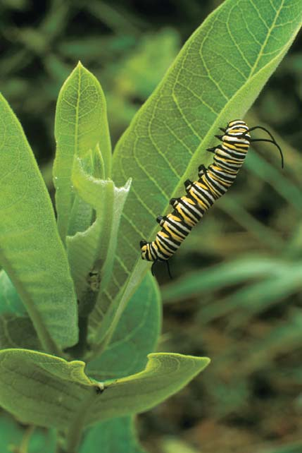
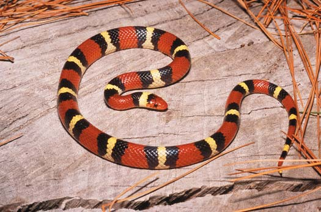
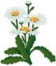

54 Ecología de comunidades
1173
CONCEPTOS CLAVE
54.1 Una comunidad consta de poblaciones que viven en el mismo sitio al mismo tiempo. Los ecólogos de comunidades se centran en cuestiones concernientes al número de especies, la abundancia relativa de cada una, la interacción entre ellas y la resistencia de la comunidad a las perturbaciones ambientales. 54.2 Las especies dominantes y las especies clave tienen amplios efectos comunitarios sobre el fl ujo de energía y la estructura de la comunidad: las especies dominantes debido a su gran biomasa o abundancia y las especies clave a pesar de su biomasa o abundancia relativamente pequeña. 54.3 Los factores que infl uyen en la diversidad de la comunidad incluyen el número, la variedad y la abundancia de las especies. Experimentos de campo con plantas, que se iniciaron en la década de 1990 sugieren que las comunidades más diversas tienen mayor estabilidad o resistencia al cambio. 54.4 La mayoría de los ecólogos considera que las comunidades son asociaciones laxas de organismos que tienen requerimientos ambientales semejantes y por tanto viven juntos en el mismo ambiente. Luego de una perturbación, las comunidades experimentan una sucesión de comunidades pioneras a comunidades maduras.
E
n el capítulo 53 se analizó la dinámica de poblaciones. En el mundo natural, la mayoría de las poblaciones forman parte de una comunidad , que consta de una asociación de poblaciones de especies diferentes que viven e interactúan en el mismo sitio al mismo tiempo. La defi nición de comunidad es deliberadamente amplia porque se refi ere a categorías ecológicas que varían bastante en tamaño, carecen de fronteras precisas y rara vez están aisladas por completo. Las comunidades más pequeñas se anidan dentro de comunidades más grandes. Un bosque es una comunidad, pero también lo es un tronco en descomposición en ese bosque (vea la fotografía). Los insectos, las plantas y los hongos invaden un árbol caído en la medida en que éste se desintegra. Las termitas y otros insectos que habitan en la madera perforan túneles a través de la corteza y la madera. Otros insectos, raíces de plantas y hongos continúan agrandando estas aberturas. Los musgos y líquenes en la superfi cie del tronco atrapan agua de lluvia y extraen minerales (nutrientes inorgánicos), y los hongos y las bacterias hacen más rápida la degradación, lo que suministra nutrientes para otros habitantes. A medida que la decadencia avanza, pequeños mamíferos cavan en la madera y se comen a los hongos, insectos y plantas.
Comunidad en un tronco en descomposición. Los árboles caídos, conocidos como “troncos nodriza”, protegen plantas y otros organismos para enriquecer el suelo a medida que se desintegran. Fotografi ado en Pennsylvania.
Michael P. Gadomski/Photo Researchers, Inc.
1174 Capítulo 54
Los organismos existen en un ambiento abiótico (inerte) que es tan esencial para sus vidas como las interacciones entre unos y otros. Por ejemplo: minerales, aire, agua y luz solar son tan importantes en el ambiente de una abeja como las fl ores que poliniza y de las que toma el néctar. En conjunto, una comunidad biológica y su ambiente abiótico forman un ecosistema . Igual que las comunidades, los ecosistemas son entidades amplias que hacen referencia a unidades ecológicas de varios tamaños. Ahora se presentan algunos de los retos en el intento de encontrar patrones y procesos comunes que rigen a las comunidades. La comunidad viviente se destaca en este capítulo y los componentes abióticos de los ecosistemas, incluyendo el fl ujo de energía y la estructura trófi ca (relaciones alimenticias), el ciclo de nutrientes y el clima se consideran en el capítulo 55.
54.1 ESTRUCTURA Y FUNCIONAMIENTO DE LA COMUNIDAD
OBJETIVOS DE APRENDIZAJE
1 Defi nir nicho ecológico y distinguir entre un nicho fundamental de un organismo y su nicho realizado. 2 Defi nir competencia y distinguir entre competencia interespecífi ca e intraespecífi ca. 3 Resumir los conceptos de principio de exclusión competitiva, repartición de recursos y desplazamiento de carácter. 4 Defi nir depredación y describir los efectos de la selección natural en las relaciones depredador-presa. 5 Distinguir entre mutualismo, comensalismo y parasitismo, y dar ejemplos de cada uno.
Las comunidades exhiben características propias que no ocurren en las poblaciones. Estas propiedades, conocidas en conjunto como estructura comunitaria y funcionamiento comunitario, incluyen el número y los tipos de especies presentes, la abundancia relativa de cada una, la interacción entre especies diferentes, la resistencia de la comunidad a las perturbaciones, el fl ujo de energía y nutrientes por toda la comunidad, y la productividad. La ecología de comunidades es la descripción y análisis de patrones y procesos dentro de la comunidad. El descubrimiento de patrones y procesos comunes en una amplia gama de comunidades, por ejemplo: una comunidad estanque, una comunidad de bosque de pinos y una comunidad de artemisas del desierto, ayudan a los ecólogos a comprender la estructura y el funcionamiento de la comunidad. Las comunidades son bastante difíciles de estudiar porque un gran número de individuos de muchas especies diferentes interactúan entre sí y son interdependientes de varias maneras. Las especies compiten en-
Jardin Lautaret/Station Alpine Joseph Fourier
Se plantaron pamplinas oreja de ratón de campo ( Cerastium arvense ) que crecieron en grupos dentro ( rojo ) y fuera ( azul ) de macizos de Laretia acaulis .
Las plantas Laretia acaulis incrementan la tasa de supervivencia de ciertas plantas vecinas a 2800 m en los Andes chilenos. El efecto es menos pronunciado a elevaciones mayores.
Se plantaron plantas de cebada alpina ( Hordeum comosum ) que crecieron en grupos dentro ( rojo ) y fuera ( azul ) de macizos de Laretia acaulis .
Porcentaje de supervivencia de plántulas
Tiempo (días) Tiempo (días)
100
80
60
40
20
100
80
60
40
20
20 0 40 60 80 100 120 140 160 20 0 40 60 80 100 120 140 160
FIGURA 54-1 Facilitación en comunidades alpinas (b y c , adaptadas de Cavieres, L. A. et al . “Positive Interactions between Alpine Plant Species and the Nurse Cushion Plants Laretia acaulis Do Not Increase with Elevation in the Andes of Central Chile”. New Phytologist , 2005).
Ecología de comunidades 1175
llotas también atrae a ciervos portadores de garrapatas hacia los bosques de robles. La descendencia hambrienta de las garrapatas se alimenta de los ratones, que a menudo son vectores de la bacteria que produce la enfermedad de Lyme. La bacteria infecta a las garrapatas en maduración y, a su vez, se dispersa a los humanos que son mordidos por las garrapatas infectadas. En 2006, los científi cos concluyeron que es posible pronosticar qué años representan la mayor amenaza potencial de la enfermedad de Lyme para los humanos, con base en la época cuando los robles son más productivos. El riesgo de la enfermedad de Lyme es mayor dos años después de una abundante cosecha de bellotas. Dentro de una comunidad, ninguna especie existe de manera independiente de otra especie. Como muestra el ejemplo precedente, las poblaciones de una comunidad interactúan y se afectan mutuamente de maneras complicadas que no siempre son evidentes. Entre las especies en una comunidad ocurren tres tipos principales de interacciones: competencia, depredación y simbiosis. Sin embargo, antes de abordarlas, es necesario analizar el estilo de vida de una especie dada en su comunidad.
El nicho es un papel ecológico de una especie en la comunidad
Se cree que cada especie tiene su propio papel ecológico dentro de la estructura y funcionamiento de una comunidad; dicho papel se denomina nicho ecológico . Aunque el concepto de nicho ecológico ya ha estado en uso en ecología desde principios del siglo xx, el ecólogo de Yale, G. E. Hutchinson fue el primero en describir en 1957 la naturaleza multidimensional del nicho que se acepta hoy. Un nicho ecológico considera todos los aspectos bióticos y abióticos de la existencia de la especie; es decir, todos los factores físicos, químicos y biológicos que las especies requieren para sobrevivir, permanecer sanas y reproducirse. Entre otras
tre sí por comida, agua, espacio vital y otros recursos. (De acuerdo con este contexto, un recurso es cualquier cosa del ambiente que satisfaga las necesidades de una especie particular). Algunos organismos matan y consumen a otros organismos. Algunas especies establecen asociaciones estrechas entre sí, mientras otras parecen estar conectadas sólo de manera distante. Ciertas especies interactúan en formas positivas, en un proceso conocido como facilitación , que modifi ca y mejora el ambiente local para otras especies. Por ejemplo, las plantas alpinas en ambientes montañosos hostiles crecen más rápido, a mayor altura y se reproducen con mayor éxito cuando en su proximidad crecen otras plantas de cierta clase ( FIGURA 54-1 ). Asimismo, cada organismo desempeña uno de tres papeles importantes en la vida comunitaria: productor, consumidor o desintegrador. Uno de los objetivos de los ecólogos de comunidades es desentrañar las muchas interacciones positivas y negativas, directas e indirectas de los organismos que viven juntos como comunidad.
Las interacciones comunitarias son complicadas y a menudo no son fácilmente evidentes
A fi nes de la década de 1990 surgió una relación intrincada entre la producción de bellotas, ratones de patas blancas, ciervos, crecimiento de población de polillas gitanas y la posible presencia de la enfermedad de Lyme en los humanos ( FIGURA 54-2 ). Experimentos a gran escala realizados en bosques de roble en el noreste de Estados Unidos relacionaron las abundantes cosechas de bellotas, que ocurren cada tres o cuatro años, con el aumento de las poblaciones de ratón (el ratón come bellotas). Debido a que los ratones también comen pupas de polillas gitanas, las condiciones de abundancia de bellotas también llevan a bajas poblaciones de polillas gitanas. Este resultado ayuda a los robles porque las polillas gitanas producen defoliación grave. Sin embargo, la abundancia de be-
Ciervo atraído al bosque de robles
Aumento en la población de garrapatas
Peligro para la salud pública
Árboles del bosque más sanos
Incremento de la exposición humana a la bacteria de la enfermedad de Lyme
Abundante cosecha de bellotas Disminución en la población de pupas de polilla gitana
Aumento en la población de ratones de patas blancas
FIGURA 54-2 Relaciones con el tamaño de una cosecha de bellotas Cuando hay una abundante cosecha de bellotas, más ratones sobreviven y se reproducen en invierno, y más ciervos son atraídos a los bosques de robles. Los ratones y los ciervos son huéspedes de garrapatas que pueden transmitir la bacteria de la enfermedad de Lyme a los humanos. La abundancia de ratones también reduce las poblaciones de polillas gitanas, mejorando así la salud de los árboles del bosque.
1176 Capítulo 54
y rápidamente se volvió común ( FIGURA 54-3b ). De repente, las lagartijas verdes se volvieron raras, aparentemente expulsadas de su hábitat por competencia con las lagartijas cafés ligeramente más grandes. Sin embargo, una investigación detallada descubrió que las lagartijas verdes aún habitaban el lugar. Ahora estaban bastante confi nadas a la vegetación en los humedales y a las copas foliadas de los árboles, donde eran menos fáciles de ver. La porción de hábitat del nicho fundamental de las lagartijas verdes incluye los troncos y las copas de los árboles, las paredes exteriores de las casas y muchos otros sitios. Una vez que las lagartijas cafés se establecieron en el hábitat de las lagartijas verdes, desplazaron a éstas de todas partes, salvo de los humedales y de las copas de los árboles; la competencia entre las dos especies redujo el nicho realizado de las lagartijas verdes ( FIGURA 54-3c y d ). Debido a que las comunidades constan de numerosas especies, muchas de las cuales compiten en alguna medida, las interacciones entre ellas producen el nicho realizado de cada especie.
Los recursos limitantes restringen el nicho ecológico de una especie
Las adaptaciones estructurales, fi siológicas y conductuales de una especie determinan su tolerancia a extremos ambientales. Si cualquier característica de un ambiente se ubica fuera de los límites de su tolerancia, entonces la especie no puede vivir ahí. De la misma manera en que no se espera encontrar un cactus viviendo en un estanque, no es de esperar encontrar lirios acuáticos en un desierto. Los factores ambientales que realmente determinan el nicho ecológico de una especie son difíciles de identifi car. Por ello, el concepto de nicho ecológico es bastante abstracto, aunque algunas de sus dimensiones pueden determinarse de manera experimental. Cualquier recurso ambiental que, debido a que es escaso o desfavorable, tiende a restringir el nicho ecológico de una especie se denomina recurso limitante . La mayoría de los recursos limitantes que han sido estudiados son variables simples, como el contenido de minerales en el suelo, las temperaturas extremas y las cantidades de precipitación. Tales investigaciones han revelado que cualquier factor que excede la tolerancia de una especie o que está presente en cantidades inferiores al mínimo requerido, limita la presencia de dicha especie en una comunidad. Por su interacción, tales factores ayudan a defi nir el nicho ecológico de una especie. Los recursos limitantes pueden afectar sólo parte del ciclo de vida de un organismo. Por ejemplo, aunque los cangrejos azules adultos viven en agua dulce o ligeramente salobre, no se establecen permanentemente en tales áreas porque sus larvas (formas inmaduras) requieren agua salada.
cosas, el nicho incluye el ambiente local en que vive una especie: su hábitat . Un nicho también comprende lo que una especie come, qué se la come, qué organismos compiten con ella y cómo interactúa con los componentes abióticos de su ambiente, como luz, temperatura y humedad, y como es infl uida por ellos. Así, el nicho representa la totalidad de adaptaciones de una especie a su ambiente, su uso de recursos y el estilo de vida al que se adapta. Aunque una descripción completa de nicho ecológico de un organismo implica muchas dimensiones y resulta difícil de defi nir con precisión, los ecólogos suelen confi nar sus estudios a una o algunas variables del nicho, como conductas de alimentación o capacidad para tolerar temperaturas extremas. El nicho ecológico de una especie es mucho más amplio desde un punto de vista hipotético que real. Una especie suele ser capaz de usar muchos más de los recursos de su ambiente o de vivir en una variedad de hábitats más amplia de los que realmente habita. El nicho ecológico potencial de una especie es su nicho fundamental , pero varios factores, como la competencia con otras especies, pueden excluirla de parte de su nicho fundamental. Así, el estilo de vida que una especie persigue realmente y los recursos que verdaderamente usa constituyen su nicho realizado . Un ejemplo puede ayudar a hacer esta distinción más clara. La lagartija verde, nativa de Florida y otros estados sudorientales de Estados Unidos, se posa en los árboles, arbustos o vallas durante el día en espera de presas: insectos o arañas ( FIGURA 54-3a ). En el pasado estas pequeñas lagartijas abundaban en Florida. Sin embargo, hace algunos años, una especie relacionada, la lagartija café, fue introducida desde Cuba en el sur de Florida
La lagartija verde ( Anolis carolinensis ) es la única especie de su tipo nativa de Norteamérica. Los machos miden alrededor de 12.5 cm de largo; las hembras son ligeramente más pequeñas.
La larga lagartija café de 15.2 cm de longitud fue introducida en Florida. Es nativa de Cuba y las Bahamas.
Posiciones de las dos especies a lo largo de una sola dimensión del nicho (en este caso, hábitat). La especie 1 representa la lagartija verde y la 2 la lagartija café. Los nichos fundamentales de las dos lagartijas se superponen.
La lagartija café compite con la lagartija verde en el área donde sus nichos se superponen, restringiendo el nicho de la lagartija verde.
Uso del recurso
Dimensión del nicho (hábitat)
Especie 1 Especie 2
Superposición de nichos
Uso del recurso
Dimensión del nicho (hábitat)
Especie 1 Especie 2
Ed Kanze/Dembinsky Photo Associates
© Hakoar/Dreamstime
FIGURA 54-3 Efecto de la competencia en el nicho realizado de una especie
Ecología de comunidades 1177
a la desecación cuando la marea se retira. Sin embargo, cuando Connell retiró los Balanus de las rocas inferiores, el Chthalamus se expandió hacia las partes inferiores de la zona intermareal. Las dos especies compiten por espacio y el Balanus , que es más grande y crece más rápido, compite con los percebes Chthalamus más pequeños. La competencia entre las especies de percebes por el recurso limitante de espacio vital fue uno de los procesos que demostró la investigación de Connell. A continuación se abordan algunos aspectos de la competencia que varios ecólogos han revelado tanto en el laboratorio como en estudios de campo.
La competencia es intraespecífi ca o interespecífi ca
La competencia ocurre cuando dos o más individuos intentan usar el mismo recurso esencial, como comida, agua, abrigo, espacio vital o luz solar. Debido a que el suministro de recursos a menudo está limitado en el ambiente, su uso por un individuo disminuye la cantidad disponible para otros ( TABLA 54-1 ). Por ejemplo, si un árbol en un bosque denso crece más alto que los árboles circundantes, absorbe más de la luz solar entrante. En consecuencia, hay menos luz solar disponible para los árboles próximos que crecen a la sombra del árbol más alto. La competencia ocurre entre los individuos de una población (competencia intraespecífi ca) o entre especies diferentes (competencia interespecífi ca) . (La competencia intraespecífi ca se analizó en el capítulo 53).
De manera semejante, el faisán de collar, un popular ave de caza nativa de Asia, ha sido introducido ampliamente en el sur de Estados Unidos. Las aves adultas se encuentran bien ahí, pero los huevos no se desarrollan apropiadamente en las temperaturas sureñas más cálidas.
Los factores bióticos y abióticos infl uyen el nicho ecológico de una especie
En la década de 1960, el ecólogo estadounidense Joseph H. Connell investigó los factores bióticos y abióticos que afectan la distribución de dos especies de percebes en la zona intermareal rocosa a lo largo de la costa de Escocia. Esta zona es un ambiente desafi ante, cuyos organismos deben tolerar la exposición al aire que los seca durante las mareas bajas. Los percebes son crustáceos sésiles cuyos cuerpos están cubiertos por una concha de carbonato de calcio (vea la fi gura 31-22a). Cuando su concha está abierta, extiende sus apéndices plumosos para fi ltrar comida del agua. A lo largo de la costa de Escocia, más adultos de una especie de percebe, Balanus balanoides , están fi jos en rocas inferiores en la zona intermareal que adultos de otra especie, Chthalamus stellatus ( FIGURA 54-4 ). La distribución de las dos especies no se traslapa, aunque larvas inmaduras de ambas especies viven juntas en la zona intermareal. Connell manipuló las dos poblaciones para determinar los factores que afectan sus distribuciones. Cuando retiró los Chthalamus de las rocas superiores, los percebes Balanus no se expandieron al área vacante. Los experimentos de Connell demostraron que el Chthalamus es más resistente que el Balanus
Chthalamus
Balanus
Nivel de la marea más alta
Nivel de la marea más baja
Especies de percebes de dos géneros, Chthalamus y Balanus , crecen en la zona intermareal de una costa rocosa en Escocia.
Cuando individuos de Chthalamus fueron retirados experimentalmente, los individuos de Balanus no se expandieron a su sección en la roca.
Cuando individuos de Balanus fueron retirados experimentalmente, los individuos de Chthalamus se distribuyeron en el área vacía.
Marea alta
Marea baja
FIGURA 54-4 Factores abióticos y bióticos que afectan la distribución de percebes (Según Connell, J. H., “The Infl uence of Interspecifi c Competition and Other Factors on the Distribution of the Barnacle Chthalamus stellatus”. Ecology , vol. 42, 1961).
1178 Capítulo 54
duce. En el ejemplo de las lagartijas, la competencia directa entre las dos especies se redujo a medida que las lagartijas café excluyeron a las verdes de la mayor parte de su hábitat. La evidencia inicial de que la competencia interespecífi ca contribuye al nicho realizado de una especie proviene de una serie de experimentos de laboratorio efectuados por el biólogo ruso Georgyi F. Gause en la década de 1930 (vea las descripciones de otros experimentos de Gause en el capítulo 53). En un estudio, Gause hizo crecer poblaciones de dos especies de protozoarios, Paramecium aurelia , y el más grande P. caudatum , en condiciones controladas ( FIGURA 54-5 ). Cuando se les hizo crecer en tubos de ensayo separados; es decir, en ausencia de la segunda especie, la población de cada especie aumentó rápidamente
Los ecólogos suponían tradicionalmente que la competencia es el determinante más importante tanto en el número de especies encontradas en una comunidad como en el tamaño de cada población. Hoy los ecólogos reconocen que la competencia es sólo uno de los muchos factores bióticos y abióticos interactuantes que afectan la estructura de la comunidad. Además, la competencia no siempre es una interacción directa. Por ejemplo, varios tipos de plantas que fl orecen viven en un bosque de pinos jóvenes y presumiblemente compiten con las coníferas por recursos como la humedad del suelo y los minerales presentes en éste. Sin embargo, su relación es más complicada que la simple competencia. Las fl ores producen néctar que es consumido por algunas especies de insectos que también son depredadores de insectos que se alimentan de las agujas de los árboles, reduciendo así el número de insectos que se alimentan de los pinos. Por tanto, resulta difícil valorar el efecto global que las plantas con fl ores ejercen sobre los pinos. Si las plantas que fl orecen fuesen retiradas de su comunidad, ¿los pinos crecerían más rápido debido a que ya no tendrían que competir por los recursos naturales? ¿O el aumento en la cantidad de insectos que se alimentan de las agujas de los árboles (ocasionado por menos insectos depredadores) inhibiría el crecimiento de los pinos? Experimentos a corto plazo, en los que la especie de una planta que compite se retira de una comunidad boscosa, a menudo han demostrado una mejora en el crecimiento de las especies restantes. Sin embargo, muy pocos estudios han probado los efectos experimentados a largo plazo por las especies forestales debidos a la eliminación de una sola especie que compite. Estos efectos a largo plazo pueden ser sutiles, indirectos y difíciles de comprobar; podrían disminuir o negar los efectos a corto plazo de la competencia por recursos.
La competencia entre especies con nichos que se podría llevar a exclusión competitiva
Cuando dos especies son semejantes, como las lagartijas verde y café o las dos especies de percebes, sus nichos fundamentales pueden superponerse. Sin embargo, con base en trabajo experimental y de elaboración de modelos, muchos ecólogos consideran que no hay dos especies que ocupen de manera indefi nida el mismo nicho en la misma comunidad. Según el principio de exclusión competitiva , se conjetura que una especie excluye a otra de su nicho como resultado de la competencia interespecífi ca. Aunque es posible que las especies compitan por algún recurso necesario sin ser competidores totales, no pueden coexistir dos especies específi cas con nichos ecológicos absolutamente idénticos. Sin embargo, la coexistencia ocurre si el traslape entre los dos nichos se re-
Interacciones ecológicas entre especies
Efecto en Efecto en la Interacción la especie 1 especie 2
Competencia entre la especie 1 Dañino Dañino y la especie 2
Depredación de la especie 2 (presa) Benéfi co Dañino por la especie 1 (depredador)
Simbiosis
Mutualismo de las Benéfi co Benéfi co especies 1 y 2
Comensalismo de las Benéfi co Ningún especies 1 y 2 efecto
Parasitismo de la especie 1 Benéfi co Dañino (parásito) sobre la especie 2 (huésped)
TABLA 54-1
EXPERIMENTO CLAVE
PREGUNTA: ¿Es posible demostrar la exclusión competitiva en el laboratorio en condiciones controladas?
HIPÓTESIS: Cuando dos poblaciones de paramecios (protozoos ciliados) crecen juntas en un cultivo mixto, una especie compite con la otra.
EXPERIMENTO: Gause hizo crecer dos especies de paramecios por separado y juntas.
50
100
50
100
50
100
3 0 6 9 12 15 18
Días
Densidad de población relativa
P. aurelia (sola)
P. aurelia (en el cultivo mixto)
P. caudatum (sola)
P. caudatum (en el cultivo mixto)
RESULTADOS Y CONCLUSIÓN: Las gráfi cas superior y de en medio muestran cómo cada especie de Paramecium prospera cuando crece sola. La gráfi ca inferior muestra la forma en que crecen juntas, en competencia mutua. En el cultivo mixto, el P. aurelia compite con el P. caudatum, lo cual resulta en exclusión competitiva.
Fuente: adaptado de Gause, G. F., The Struggle for Existence. Williams & Wilkins, Baltimore, 1934.
FIGURA 54-5 Animada Experimento clásico de G. F. Gause sobre competencia interespecífi ca
Ecología de comunidades 1179
existe una o la otra. Sin embargo, donde sus distribuciones se superponen, las dos especies difi eren signifi cativamente en tamaño de fl or y son polinizadas por diferentes tipos de abeja. En otras palabras, el desplazamiento de carácter reduce la competencia interespecífi ca, en este caso para el mismo animal polinizador. Los tamaños de los picos de los pinzones de Darwin son otro ejemplo de desplazamiento de carácter ( FIGURA 54-7 ). En grandes islas en las Galápagos donde el pinzón terrestre mediano ( Geospiza fortis ) y el pinzón terrestre pequeño ( G. fuliginosa ) viven juntos, las profundidades de sus picos son distintivas. El Geospiza fuliginosa tiene una profundidad de pico menor que le permite romper semillas pequeñas, mientras el G. fortis tiene una mayor profundidad de pico que le permite romper semillas de tamaño mediano. Sin embargo, el G. fortis y el G. fuliginosa también viven en islas separadas. Donde las dos especies viven separadas, las profundidades de pico son aproximadamente del mismo tamaño intermedio, tal vez porque no hay competencia de la otra especie. Aunque estos ejemplos de la coexistencia de especies semejantes son explicados en términos de desplazamiento de carácter, la hipótesis del desplazamiento de carácter ha sido demostrada en la naturaleza en sólo unos cuantos casos. En 2006, Peter y Rosemary Grant, que han estudiado los pinzones de Darwin en las islas Galápagos por más de 30 años, reportaron en el periódico Science otro ejemplo de desplazamiento de carácter en los pinzones de Darwin. El pinzón terrestre mediano ( G. fortis ) originalmente vivía solo en una de las pequeñas islas Galápagos. Diferentes individuos de G. fortis tenían tamaños de pico variables que les permitían comer semillas pequeñas, medianas y grandes. Sin em-
hasta un nivel impuesto por los recursos y permaneció ahí durante algún tiempo. Sin embargo, cuando crecen juntos, sólo el P . aurelia prosperó, mientras el P . caudatum disminuyó y terminó por morir. En condiciones de cultivo diferentes, el P . caudatum prevaleció sobre el P . aurelia . Gause interpretó estos resultados como el hecho de que aun cuando un conjunto de condiciones favoreció a una especie, un conjunto diferente favoreció a la otra. A pesar de lo anterior, debido a que ambas especies eran tan semejantes, con el tiempo el triunfo fi nal era posible para una u otra. Experimentos semejantes con especies en competencia de moscas de fruta, ratones, escarabajos y plantas anuales han apoyado los resultados de Gause: una especie prospera y la otra termina por desaparecer. Así, la competencia tiene efectos adversos sobre especies que usan un recurso limitado y puede resultar en exclusión competitiva de una o más de ellas. En consecuencia, se concluye que con el tiempo la selección natural debe favorecer a individuos de cada especie que evitan o reducen la competencia por recursos ambientales. La competencia reducida entre especies que coexisten se denomina repartición de recursos y es resultado de que el nicho de cada especie difi ere de los nichos de otras de una o más formas. La repartición de recursos está bien documentado en animales; estudios en bosques tropicales en América Central y Sudamérica demuestran poco traslape en la dietas de aves, primates y murciélagos que comen frutos y coexisten en el mismo hábitat. Aunque los frutos son la comida más importante de varios cientos de especies de aves, primates y murciélagos, la amplia gama de frutos disponibles ha permitido que los consumidores de frutos se especialicen, lo cual reduce la competencia. La repartición de recursos también puede incluir la hora de alimentación, la ubicación de la comida, los sitios para anidar y otros aspectos del nicho ecológico de una especie. El estudio de Robert MacArthur, ecólogo de Princeton, de cinco especies de currucas es un ejemplo clásico de repartición de recursos ( FIGURA 54-6 ). Aunque al principio los nichos de las currucas parecían casi idénticos, MacArthur encontró que los individuos de cada especie pasan la mayor parte de su tiempo de alimentación en porciones diferentes de los abetos y otras coníferas que frecuentan. También se mueven en direcciones diferentes a través de la copa, consumen combinaciones diferentes de insectos y anidan en momentos ligeramente distintos. La diferencia en la profundidad de la raíz es un ejemplo de repartición de recursos en las plantas. Por ejemplo, tres plantas anuales comunes encontradas en campos abandonados son: pimienta de agua, malva de la India y cola de zorra erizada. Las raíces de la pimienta de agua se extienden profundamente en el suelo, las de malva crecen a una profundidad media y las de cola de zorra erizada son superfi ciales. Esta diferencia reduce la competencia por los mismos recursos, agua y minerales, al permitir que las plantas exploten porciones diferentes del recurso.
El desplazamiento de carácter es una consecuencia adaptativa de la competencia interespecífi ca
Algunas veces las poblaciones de dos especies semejantes existen juntas en algunos sitios y por separado en otros. Donde sus distribuciones geográfi cas se superponen, las dos especies tienden a diferir más en sus características estructurales, ecológicas y conductuales que cuando viven en áreas geográfi cas separadas. Esta divergencia en los rasgos de dos especies semejantes que viven en la misma área geográfi ca se conoce como desplazamiento de carácter . Los biólogos consideran que el desplazamiento de carácter reduce la competencia entre dos especies porque sus diferencias les proporcionan nichos ecológicos algo diferentes en el mismo ambiente. Hay varios ejemplos bien documentados de desplazamiento de carácter entre dos especies estrechamente relacionadas. Las fl ores de dos especies Solanum en México son bastante semejantes en áreas donde
Curruca de cabo May
Reinita cerulea
Curruca de pecho amarillo (mirto)
Cúa
Curruca austral
FIGURA 54-6 Animada Repartición de recursos Cada especie de curruca pasa por lo menos la mitad del tiempo de forrajeo en su área designada de un abeto, reduciendo así la competencia entre especies de currucas. (Según MacArthur, R. H., “Population Ecology of Some Warblers of Northeastern Coniferous Forests”. Ecology , vol. 39, 1958).
1180 Capítulo 54
pequeños picos no pueden romper las semillas más grandes preferidas por el pinzón terrestre grande.
La selección natural conforma los cuerpos y las conductas de la presa y del depredador
La depredación es el consumo de una especie, la presa , por otra, el depredador (vea la tabla 54-1). La depredación incluye animales que comen otros animales, así como animales que comen plantas ( herbivoría ). La depredación ha resultado en una “carrera por las armas” evolucionista, con la evolución de estrategias depredatorias (formas más efi caces para atrapar presas) y estrategias de presa (mejores formas de escapar del depredador). Un depredador que es más efi ciente para atrapar presas ejerce una intensa fuerza selectiva sobre su presa. Con el tiempo, las adaptaciones que reducen la probabilidad de ser capturado pueden evolucionar en las especies de presas. Estas adaptaciones, a su vez, ejercen una intensa fuerza selectiva sobre el depredador. Este tipo de evolución interdependiente de dos especies interactuantes se conoce como coevolución (vea el análisis de la coevolución en el capítulo 37). A continuación se abordan varias adaptaciones relacionadas con interacciones depredador-presa. Éstas incluyen estrategias del depredador (persecución y emboscada) y estrategias de la presa (defensas de vegetales y defensas de animales). Al leer estas descripciones, tenga en cuenta que tales estrategias no son “elegidas” por los depredadores o presas respectivas. Nuevos rasgos surgen aleatoriamente en una población como resultado de cambios genéticos. Algunos rasgos nuevos son benéfi cos, algunos son dañinos y otros carecen de efecto. Las estrategias o rasgos benéfi cos persisten en una población porque tales características hacen a los individuos que las poseen bastante aptos para desarrollarse y reproducirse. Por el contrario, las características que hacen a los individuos que las poseen defi cientemente adaptados para su ambiente tienden a desaparecer en una población.
La persecución y la emboscada son dos estrategias del depredador
Un pelícano gris ve a su presa, un pez, cuando está volando. Menos de dos segundos después de sumergirse en el agua a una velocidad hasta de 72 km/h, ya la ha capturado. Las orcas (antes conocidas como ballenas asesinas) cazan en grupo y a menudo llevan al cardumen de salmón o atún a una caleta para que su captura sea más fácil. Cualquier rasgo que incremente la efi cacia para cazar, como la velocidad de los pelícanos grises o la inteligencia de las orcas, favorece a los depredadores que persiguen a su presa. Debido a que estos carnívoros deben procesar información con rapidez durante la persecución de su presa, sus cerebros suelen ser más grandes, con respecto al cuerpo, que los de las presas que persiguen. La emboscada es otra manera efi caz de atrapar presas. La araña cangrejo amarilla, por ejemplo, es del mismo color que las fl ores blancas o amarillas donde se esconde ( FIGURA 54-8 ). Este camufl aje impide que los insectos desprevenidos que visitan la fl or en busca de néctar se percaten de la araña hasta que es demasiado tarde. También engaña a las aves que la depredan. Los depredadores que atraen a la presa son particularmente efectivos para emboscar. Por ejemplo, un grupo diverso de peces de aguas profundas conocidos como alacranes marinos cuentan con señuelos luminiscentes parecidos a varillas cerca de la boca para atraer la presa.
La protección química es una defensa vegetal efi caz contra los herbívoros
Las plantas no pueden volar para escapar de los depredadores, aunque cuentan con varias adaptaciones físicas y químicas que las protegen de
bargo, en años recientes el pinzón terrestre grande ( G . magnirostris ) colonizó la isla y comenzó a competir con el pinzón terrestre mediano por las semillas más grandes. Una sequía grave redujo el suministro de semillas, imponiendo presión adicional a la población de pinzón mediano. En respuesta, el pico del pinzón terrestre mediano divergió con rapidez, volviéndose signifi cativamente menor en longitud, profundidad y ancho promedios de lo que era. La población modifi cada de pinzones terrestres medianos ahora consume semillas pequeñas casi exclusivamente; sus
EXPERIMENTO CLAVE
PREGUNTA: ¿Es posible demostrar el desplazamiento de carácter en la naturaleza?
HIPÓTESIS : Dos especies de pinzones son más diferentes donde viven juntas que donde viven por separado.
EXPERIMENTO: Dos especies de pinzones de Darwin en las islas Galápagos fueron observadas en islas donde viven por separado y en una isla donde viven juntas. La profundidad del pico (a) que varía considerablemente en las dos especies, fue medida en los ambientes diferentes.
20
40
8 0
0
0
10 12 14
20
40
20
40
8 10 12 14
8 10 12 14
Profundidad del pico (mm)
Porcentaje de individuos de cada clase de tamaño
G. fuliginosa G. fortis Profundidad del pico
RESULTADOS Y CONCLUSIÓN : (b) Donde las dos especies se encontraron en la misma isla (Santa Cruz), el G. fuliginosa ( rosa ) tenía una profundidad de pico promedio menor que el G . fortis ( azul ). Donde viven en islas diferentes ( c , en Dafne Mayor y d , en Los Hermanos), la profundidad promedio del pico de cada una son semejantes. Así, éste es un ejemplo de desplazamiento de carácter.
Fuente: según Lack, D. Darwin’s Finches . Cambridge University Press, Cambridge, 1947.
FIGURA 54-7 Desplazamiento de carácter
Ecología de comunidades 1181
estómago (vea la fi gura 32-14a). Algunos animales viven en grupos; por ejemplo, una manada de antílopes, una colonia de abejas, un banco de anchoas o una bandada de palomas. Debido a que un grupo tiene muchos ojos, oídos y narices que ven, escuchan y huelen a los depredadores, esta conducta social disminuye la probabilidad de que un depredador atrape desprevenido a cualquiera del grupo. Las defensas químicas también son comunes entre los animales de presa. La rana veneno de fl echa sudamericana ( Dendrobates sp. ) guarda veneno en su piel. (Estas ranas obtienen las toxinas de hormigas y otros insectos en su dieta). La brillante coloración aposemática de la rana advierte a los depredadores con experiencia evitarla (vea la fi gura 32-18a). ¡Las serpientes y otros animales que alguna vez han intentado devorar a una rana venenosa no repiten el error! Otros ejemplos de coloración aposemática ocurren en la mofeta rayada, que rocía productos químicos de sus glándulas anales, y el escarabajo bombardero, que vomita productos químicos agresivos a depredadores potenciales (vea la fi gura 7-8). Algunos animales tienen coloración críptica , colores o marcas que les ayudan a ocultarse de los depredadores al mezclarse con sus entornos físicos. Ciertas orugas se asemejan tanto a ramitas que no es posible distinguir si son animales a menos que se muevan. Los peces aguja son largos, de color verde y se confunden casi perfectamente con las algas verdes. Los gecos de cola de hoja en el sur de Madagascar parecen hojas muertas o corteza musgosa, dependiendo de la especie ( FIGURA 54-10 ). Esta coloración críptica ha sido preservada y acentuada
ser comidas. La presencia de espinas, aguijones, hojas duras correosas e inclusive cera espesa en las hojas desalienta a los herbívoros a que se alimenten de estas plantas. Otras plantas producen un arreglo de productos químicos protectores que son desagradables e inclusive tóxicos para los herbívoros. Los ingredientes activos en plantas tóxicas como mariguana y tabaco afectan la actividad hormonal y las funciones nerviosas, musculares, del hígado y los riñones, y pueden desalentar el forrajeo de los herbívoros. Algo interesante de mencionar es que muchas de las defensas químicas en las plantas son de utilidad para los humanos. Por ejemplo, el árbol neem de la India contiene productos químicos efectivos contra más de 100 especies de insectos, ácaros y nematodos herbívoros. La nicotina del tabaco, el piretro del crisantemo y la rotenona de la planta de derris son otros ejemplos de productos químicos extraídos y usados como insecticidas. Las asclepias son otro ejemplo excelente de coevolución bioquímica entre las plantas y los herbívoros ( FIGURA 54-9 ). Las asclepias producen alcaloides y glicósidos cardiacos, productos químicos venenosos para todos los animales excepto para un pequeño grupo de insectos. La habilidad de tolerar o metabolizar las toxinas de las asclepias ha evolucionado en estos insectos, las comen y evitan la competencia de otros insectos herbívoros porque pocos toleran dichas toxinas. Los depredadores también aprenden a evitar a estos insectos, los cuales acumulan las toxinas en sus tejidos y por tanto se vuelven tóxicos ellos mismos. La coloración negra, blanca y amarilla de la oruga monarca, que se alimenta de asclepias, anuncia claramente su toxicidad a los depredadores que han aprendido a asociar los colores brillantes con la enfermedad. Los colores o patrones llamativos, que advierten lo desagradable de una especie a los depredadores potenciales, se denominan coloración aposemática (del griego apo “lejos” y semat , “marca o signo”) o coloración de advertencia .
Las presas animales cuentan con varias adaptaciones defensivas para evitar a los depredadores
Muchos animales, como ratones de campo y marmotas, huyen de los depredadores al refugiarse en sus madrigueras subterráneas. Otros tienen defensas mecánicas, como las púas del puercoespín y la concha de una tortuga de estanque. Para desalentar a los depredadores, el pez globo se infl a hasta el triple de su tamaño normal al bombear agua hacia su
FIGURA 54-8 Emboscada Una araña cangrejo amarilla ( Misumena vatia ) se confunde con su entorno, esperando que algún insecto desprevenido visite la fl or. La emboscada, una efi caz estrategia depredatoria, depende de sorprender a la presa.
© Leszcynski, Zigmund/Animals Animals
FIGURA 54-9 Defensas químicas de una planta Productos químicos tóxicos protegen el algodoncillo común ( Asclepia syriaca ). Sus hojas son venenosas para la mayoría de los herbívoros excepto para la oruga monarca ( Danaus plexippus ) y algunos otros insectos. Las orugas monarca tienen coloración aposemática brillante. Fotografi ada en Michigan.
© Beatty, Bill/Animals Animals/Earth Scenes

1182 Capítulo 54
Algunas veces una especie indefensa (un mímico ) es protegida de la depredación por medio de su parecido con otra especie que de alguna manera es peligrosa (un modelo ). Esta estrategia se denomina mimetismo de Batos o batesiano . Hay muchos ejemplos de este fenómeno. Por ejemplo, una inofensiva serpiente escarlata rey se parece tanto a una serpiente coralillo que los depredadores podrían evitarla ( FIGURA
54-11 ). De manera interesante, el rango de la serpiente escarlata rey es muy superior al de la serpiente coralillo. En un área donde no existen las serpientes coralillo, tener la coloración del modelo no confi ere ninguna ventaja especial a la serpiente rey y podría ser dañino, ya que activaría la selección natural. Parece que éste es el caso: en 2008 científi cos reportaron en la revista Nature que poblaciones de serpiente escarlata rey localizadas lejos de las serpientes coralillo habían experimentado selección natural y se parecían menos a su modelo. En el mimetismo de Müller o mülleriano , especies distintas ( comodelos ), todas venenosas, dañinas o desagradables, se parecen una a otras. Aunque su nocividad las protege como especie individual, su apariencia semejante funciona como una ventaja adicional porque los depredadores potenciales aprenden más fácilmente una simple coloración aposemática. Los científi cos conjeturan que las mariposas virrey y monarca son un ejemplo de mimetismo mülleriano (vea Preguntas acerca de: Mimetismo en las mariposas ).
La simbiosis implica una asociación estrecha entre especies
La simbiosis es cualquier relación o asociación estrecha entre miembros de dos o más especies. En términos generales, la simbiosis implica una especie que vive sobre o dentro de otra especie. Los compañeros de una relación simbiótica, denominados simbiontes , pueden benefi ciarse, no ser afectados o sufrir daño por la relación (vea la tabla 54-1). Ejemplos de simbiosis ocurren a lo largo de todos los dominios y reinos de la vida. La mayoría de los miles, e incluso millones, de asociaciones simbióticas son resultado de la coevolución. La simbiosis asume tres formas: mutualismo, comensalismo y parasitismo.
por medio de selección natural. Es menos probable que los depredadores capturen animales con coloración críptica. En consecuencia, estos animales tienen mayor probabilidad de vivir hasta la madurez y producir descendencia que también posee los genes de la coloración críptica.
FIGURA 54-10 Coloración críptica El geco de cola de hoja musgosa ( Uroplatus sikorae ) caza insectos en la noche y duerme oprimido contra la rama de un árbol durante el día. Es virtualmente invisible cuando duerme (observe detenidamente para percibir su cabeza y pata delantera). Fotografi ado en un bosque tropical en el sur de Madagascar.
Greg Dimijian/Photo Researchers, Inc.
Suzanne L. and Joseph T. Collins/Photo Researchers, Inc.
Serpiente escarlata rey
Serpiente coralillo oriental
Suzanne L. Collins/Photo Researchers, Inc.
FIGURA 54-11 Mimetismo batesiano En este ejemplo, (a) la serpiente escarlata rey ( Lampropeltis triangulum elapsoides ) es el mímico y (b) la serpiente coralillo oriental ( Micrurus fulvius fulvius ) es el modelo. Observe que los colores rojo y amarillo de advertencia se tocan en la coralillo pero no en el mímico inofensivo.

Ecología de comunidades 1183
Los benefi cios son compartidos en el mutualismo
El mutualismo es una relación simbiótica en la que ambos participantes se benefi cian. El mutualismo es obligado (esencial para la supervivencia de ambas especies) o facultativo (cada participante puede vivir por sí solo en ciertas condiciones). La asociación entre las bacterias fi jadoras de nitrógeno del género Rhizobium y las legumbres (plantas como chícharos, frijoles y trébol) son un ejemplo de mutualismo (vea la fi gura 55-9). Las bacterias fi jadoras de nitrógeno, que viven dentro de nódulos en las raíces de las legumbres, abastecen a las plantas con la mayor parte del nitrógeno que requieren para manufacturar compuestos que contienen este elemento, como clorofi las, proteínas y ácidos nucleicos. Las legumbres suministran azúcares y otras moléculas orgánicas ricas en azúcares a sus simbiontes bacterianos. Otro ejemplo de mutualismo es la asociación entre animales constructores de arrecifes y dinofl agelados denominados zooxantelas . Estos protistas simbióticos viven dentro de células de pólipos coralinos (el coral forma una vacuola alrededor de la célula del alga), donde fotosintetizan y proporcionan al animal compuestos de carbono y nitrógeno, así como oxígeno ( FIGURA 54-12 ). Los esqueletos de carbonato
¿Por qué algunas especies de mariposas se parecen unas a otras? Por ejemplo, la mariposa monarca ( Danaus plexippus ), es un insecto atractivo que abunda en Norteamérica (vea la fi gura, lado izquierdo ). Cuando es oruga, se alimenta exclusivamente de hojas de asclepia. El líquido blanco lechoso producido por la planta contiene venenos que el insecto tolera pero que permanecen en sus tejidos para toda la vida. Cuando un ave joven encuentra e intenta comer su primera mariposa monarca, se enferma y vomita. A partir de entonces, las aves evitan comer el insecto marcado de manera distintiva. Muchas personas confunden la mariposa virrey ( Limenitis archippus ; vea la fi gura, lado derecho) con la monarca. La virrey, que se encuentra en casi toda Norteamérica, es aproximadamente del mismo tamaño, con el color y las marcas de sus alas casi idénticos a los de la monarca. Cuando son orugas, las virrey comen álamo americano, álamo temblón y hojas de sauce, que aparentemente no contienen las sustancias venenosas. Durante el siglo pasado se creía que la mariposa virrey era un manjar para las aves, aunque su estrecho parecido con la monarca le proporcionaba alguna protección en contra de ser devorada. En otras palabras, las aves que habían aprendido a asociar las marcas distintivas y la coloración de la mariposa monarca con su mal gusto tendían a evitar a la mariposa virrey porque sus marcas eran semejantes. Por tanto, la mariposa virrey era considerada un ejemplo clásico de mimetismo batesiano.
En 1991, los ecólogos David Ritland y Lincoln Brower de la Universidad de Florida reportaron los resultados de un experimento que probó la idea sostenida largamente de que a las aves les agrada el sabor de las mariposas virrey aunque evitaban comerlas debido a su parecido con las monarca. Retiraron las alas de varios tipos de mariposas, monarca, virrey y varias especies de sabor agradable, y alimentaron con los cuerpos sin alas aparentemente idénticos a mirlos de alas rojas. Los resultados fueron sorprendentes: las monarca y las virrey eran igualmente desagradables para los pájaros. Como resultado de su trabajo, los ecólogos están reevaluando la importancia evolutiva de diferentes tipos de mimetismo. En lugar de ser un ejemplo de mimetismo batesiano, las monarca y las virrey podrían
serlo de mimetismo mülleriano, en el que dos o más especies diferentes que son desagradables o venenosas han llegado a parecerse entre sí durante el transcurso de la evolución. Esta semejanza proporciona una ventaja adaptativa porque los depredadores aprenden pronto a evitar a todas las mariposas con la coloración y marcas de las monarca y las virrey. Como resultado, menos mariposas de cada especie mueren y más individuos sobreviven para reproducirse. El estudio de las mariposas constituye un recordatorio útil sobre el proceso de la ciencia. La ampliación del conocimiento en la ciencia es una empresa en marcha y evidencias recientemente adquiridas ayudan a los científi cos a reevaluar modelos o ideas actuales. Así, el conocimiento y la comprensión científi cos están cambiando continuamente.
Preguntas acerca de
MIMETISMO EN LAS MARIPOSAS
Mimetismo mülleriano. La evidencia sugiere que las mariposas monarca (izquierda) y virrey (derecha) son un ejemplo de mimetismo mülleriano, en el que dos o más especies venenosas, dañinas o desagradables se parecen entre sí.
Thomas C. Emmel
FIGURA 54-12 Mutualismo Las motas verdes grisáceas en estos pólipos de coral rocoso ( Pocillopora ) son zooxantelas, algas que viven simbióticamente dentro de las células translúcidas del coral y lo abastecen de compuestos de carbono y nitrógeno. A cambio, el coral proporciona a las zooxantelas nitrógeno en forma de amoniaco.
P. Parks/OSF/Animals Animals
1184 Capítulo 54
amebiana; el Plasmodium , un apicomplejo que provoca la malaria; y una variedad de gusanos parásitos, como los trematodos de la sangre, tenias, oxiuros y lombrices intestinales (vea las fi guras 31-9 y 31-11). Desde la década de 1980, las abejas silvestres y domésticas en Estados Unidos han estado muriendo; por ejemplo, los apicultores perdieron aproximadamente la mitad de sus abejas en 2005, según el Department of Agriculture de Estados Unidos. Aunque la pérdida de hábitat, los climas severos y el uso de pesticidas han contribuido al problema, los ácaros varroa y los ácaros traqueales más pequeños han sido una razón fundamental de la disminución de las abejas ( FIGURA 54-14 ).
Repaso
■ ¿Cuál es la relación entre las bellotas, las polillas gitanas y la enfermedad de Lyme?
■ ¿Por qué el nicho realizado de un organismo suele ser más estrecho, o más restringido, que su nicho fundamental?
■ ¿Cuál es el principio de exclusión competitiva?
■ ¿Cuáles son los tres tipos de simbiosis?
de calcio se forman mucho más rápido alrededor de los cuerpos de coral cuando hay zooxantelas presentes; su crecimiento más rápido ayuda al coral a dominar su ubicación en un arrecife. Los corales, a su vez, suministran a las zooxantelas productos de desecho como amoniaco, que las algas usan para hacer compuestos de nitrógeno para ambos participantes. Las micorrizas son asociaciones mutualistas entre hongos y raíces de plantas. La asociación es común; los biólogos consideran que alrededor de 80% de las especies de plantas tienen micorrizas. El hongo, que crece alrededor y hacia dentro de las raíces, así como hacia el suelo circundante, absorbe minerales esenciales, especialmente fósforo, del suelo y los proporciona a la planta. A cambio, la planta suministra al hongo moléculas orgánicas producidas por fotosíntesis. Las plantas crecen más vigorosamente en presencia de hongos micorrizas (vea las fi guras 29-19 y 36-11) y toleran mejor los estresantes ambientales como sequías y elevadas temperaturas del suelo. De hecho, algunas plantas son incapaces de mantenerse por sí solas en condiciones naturales si no están presentes los hongos con los que normalmente forman micorrizas.
El comensalismo es tomar sin dañar
El comensalismo es un tipo de simbiosis en el que una especie se benefi cia y la otra no es dañada ni ayudada. Un ejemplo de comensalismo es la relación entre insectos sociales y carroñeros como ácaros, escarabajos o milpiés, que viven en los nidos de los insectos sociales. Por ejemplo, ciertos tipos de lepismas se mueven juntos en asociación permanente con las columnas en marcha de un ejército de hormigas y comparten la abundante comida atrapada en las incursiones de las hormigas. El ejército de hormigas no obtiene ningún benefi cio o daño aparente de las lepismas. Otro ejemplo de comensalismo es la relación entre un árbol huésped y sus epifi tas, que son plantas más pequeñas, como orquídeas, helechos y musgos sujetos a las ramas del huésped ( FIGURA 54-13 ). La epifi ta se ancla al árbol pero no obtiene nutrientes o agua directamente de éste. Vivir en el árbol le permite obtener luz adecuada, agua (como gotas de lluvia que escurren por las ramas) y minerales necesarios (deslavados de las hojas del árbol por la lluvia). Así, la epifi ta se benefi cia de la asociación, mientras el árbol permanece sin cambio aparente. (Sin embargo, las epifi tas dañan a su huésped si están presentes en un número sufi cientemente grande para bloquear la luz solar hacia las hojas del huésped; en este caso, la relación ya no es comensalismo).
El parasitismo es tomar a expensas de otro
El parasitismo es una relación simbiótica en la que un miembro, el parásito , se benefi cia, mientras el otro, el huésped , es afectado de manera adversa. El parásito obtiene alimento de su huésped. Un parásito rara vez mata directamente al huésped, aunque puede debilitarlo, haciéndolo más vulnerable a los depredadores, competidores y estresantes abióticos. Cuando un parásito provoca una enfermedad y algunas veces la muerte del huésped, se denomina patógeno . Las garrapatas y otros parásitos que viven fuera del cuerpo del huésped se denominan ectoparásitos . La fi gura 32-9 muestra una lamprea, un ectoparásito sobre un pez. Parásitos como las lombrices que viven dentro del huésped se denominan endoparásitos . El parasitismo es un estilo de vida exitoso; según una estimación, más de dos tercios de todas las especies son parásitas, ¡y más de 100 especies de parásitos viven dentro o sobre la especie humana sola! Algunos ejemplos de parásitos humanos incluyen la Entamoeba histolytica , una ameba que provoca disentería
FIGURA 54-13 Comensalismo El musgo de Florida ( Tillandsia usneoides ) es una epifi ta gris que cuelga de plantas más grandes en el sureste de Estados Unidos. En realidad no es un musgo, sino una planta de la familia de las pináceas que fl orece. Aunque a menudo mide 6 m o más, no es parásito y no daña al árbol huésped. Fotografi ado en otoño en Carolina del Norte, suspendida de un ciprés de los pantanos cuyo follaje ha cambiado de color.
Jeff Lepore/Photo Researchers, Inc.
Ecología de comunidades 1185
Otras especies de una comunidad dependen de las especies clave o son afectadas en gran medida por ellas
Ciertas especies, denominadas especies clave , son cruciales en la determinación de la naturaleza de toda la comunidad; es decir, su composición de especies y el funcionamiento del ecosistema. Las especies clave no suelen ser las más abundantes en la comunidad. Aunque están presentes en cantidades relativamente pequeñas, los individuos de una especie clave infl uyen de manera profunda en toda la comunidad porque a menudo afectan la cantidad de comida y agua disponibles, o algún otro recurso. Así, el impacto de las especies clave es bastante desproporcionado con respecto a su abundancia. La identifi cación y protección de las especies clave son dos metas cruciales de la biología de conservación (vea el capítulo 57). Si una especie clave desaparece de una comunidad, muchas otras especies en dicha comunidad podrían volverse más comunes a raras, e inclusive desaparecer. El término especies clave fue acuñado por el ecólogo Robert T. Paine en 1969, con base en sus estudios experimentales a lo largo de la costa del Pacífi co en el estado de Washington ( FIGURA 54-15 ). Paine retiró una estrella de mar depredadora, Pisaster ochraceus , de una comunidad intermareal que incluía percebes, mejillones, lapas y quitones, a todos los cuales depredaba la estrella de mar. Observó los cambios resultantes en la estructura de la comunidad y los comparó con un área de control próxima donde las estrellas de mar se dejaron intactas. Después de retirar las estrellas de mar, aproximadamente la mitad de las 15 especies desapareció del área de prueba, saturada de ciertas poblaciones de mejillones y percebes, que aumentaron rápidamente una vez libres de la depredación de las estrellas de mar. Paine observó que cuando de una comunidad se retira un depredador clave como la estrella de mar, la diversidad de especies de esa comunidad cambia notoriamente. Un problema con el concepto de especie clave es que a menudo resulta difícil medir todos sus impactos directos e indirectos sobre un ecosistema. En consecuencia, la mayoría de la evidencia sobre la existencia
54.2 INTENSIDAD Y DIRECCIÓN DE LAS INTERACCIONES COMUNITARIAS
OBJETIVOS DE APRENDIZAJE
6 Distinguir entre especies clave y especies dominantes. 7 Distinguir entre los procesos abajo-arriba y arriba-abajo en la regulación de los ecosistemas.
Hay bastante variación en la intensidad y dirección de las interacciones entre especies dentro de comunidades ecológicas. Algunas especies, conocidas como especies clave , están presentes en una comunidad en poca abundancia y/o biomasa, pero tienen poderosos efectos sobre sus comunidades. Otras especies, conocidas como especies dominantes , ejercen poderosos efectos en sus comunidades porque están presentes en gran abundancia y/o biomasa. Dos tipos de control afectan a las comunidades ecológicas, los procesos abajo-arriba y los procesos arribaabajo. En los procesos abajo-arriba , la disponibilidad de nutrientes o de organismos alimento cuya población se ve afectada directamente por la asequibilidad de nutrientes afecta la abundancia de otros organismos de la comunidad. En los procesos arriba-abajo , los depredadores afectan la abundancia de otras poblaciones en la comunidad. A continuación se analizarán estos aspectos de las interacciones entre especies dentro de comunidades ecológicas.
100 μ m
U.S. Department of Agriculture/Agricultural Research Service
FIGURA 54-14 Parasitismo Los ácaros traqueales microscópicos ( Acarapis woodi ) son endoparásitos que viven en los tubos traqueales de las abejas, obstruyendo sus vías respiratorias de modo que no pueden respirar efi cientemente. Los ácaros traqueales también chupan el fl uido circulatorio de las abejas, debilitándolas y fi nalmente matándolas. Los entomólogos creen que los ácaros varroa más grandes ( no se muestran ), que son ectoparásitos que también se alimentan del fl uido circulatorio, son más devastadores para las poblaciones de abejas que los ácaros traqueales. Los ácaros también pueden transmitir virus a sus abejas huéspedes.
FIGURA 54-15 Comunidad rocosa intermareal durante la marea baja Estrellas de mar Pisaster y quitones adheridos a la roca durante la marea baja. El color de las estrellas de mar Pisaster va del morado al café y al anaranjado. Fotografi ado en verano en el Pacífi co noroccidental.
© blueeyes/Shutterstock
1186 Capítulo 54
en el fl ujo de energía a lo largo del ecosistema boscoso. De manera semejante, la espartina ( Spartina ) es la especie dominante en las marismas, los pastos en los pastizales y las algas marinas en los lechos de algas marinas. Los animales también son especies dominantes; por ejemplo, los corales son la especie dominante en los arrecifes de coral y el ganado es la especie dominante en los pastizales pastoreados en exceso. En términos generales, una comunidad tiene una o algunas especies dominantes, y la mayoría de las demás especies es relativamente rara.
La regulación de un ecosistema ocurre abajo-arriba y arriba-abajo
Una cuestión que los ecólogos han considerado recientemente es cuál proceso regulatorio, abajo-arriba o arriba-abajo, es más importante en la regulación de varios ecosistemas. Tanto el fl ujo de energía (vea la fi gura 1-8) como los ciclos de la materia están implicados en los procesos abajo-arriba y arriba-abajo. Los procesos abajo-arriba se basan en redes alimentarias , la serie interconectada de organismos a través de los cuales fl uye la energía en un ecosistema. Las redes alimentarias siempre tienen plantas u otros productores en el primer nivel trófi co (el más bajo) ( FIGURA 54-16a ). (Un nivel trófi co es la posición de un organismo en una red alimentaria; por ejemplo, los productores son el primer nivel trófi co y los herbívoros que consumen plantas son el segundo nivel). En cierto sentido, los ciclos biogeoquímicos que regeneran nutrientes como nitratos y fosfatos para que los productores los asimilen se encuentran localizados “bajo” el primer nivel trófi co. Así, los procesos abajo-arriba regulan la función del ecosistema por ciclaje de nutrientes y por la disponibilidad de otros recursos. Si los procesos abajo-arriba dominan un ecosistema, la disponibilidad de recursos como agua o minerales del suelo controla el número de productores, lo que a su vez controla el número de herbívoros, que controla el número de carnívoros. (Recuerde del capítulo 53 que los recursos limitantes tienden a restringir los nichos ecológicos de los organismos, afectando así el tamaño de la población). Los procesos abajo-arriba parecen predominar en ciertos ecosistemas acuáticos en los que el nitrógeno o el fósforo son limitantes. Un experimento en el que se agregó fósforo a un río defi ciente de fósforo (el río Kaparuk en Alaska) resultó en un incremento de algas, seguido con
de especies clave se basa en observaciones indirectas en lugar de en manipulaciones experimentales. Por ejemplo, considere la higuera. Debido a que este árbol produce una cosecha continua de frutos, podría ser una especie clave en los bosques tropicales de Centro y Sudamérica. Los monos, pájaros, murciélagos y otros vertebrados que comen frutas del bosque normalmente no consumen grandes cantidades de higo en su dieta. Sin embargo, durante ese período del año cuando otras frutas son menos abundantes, la higuera se vuelve importante para el sustento de los vertebrados que consumen frutas. En consecuencia, se supone que en caso de que la higuera desapareciera, también lo harían la mayoría de los vertebrados que comen frutas. A su vez, en caso de que éstos desaparecieran, la distribución espacial de otras plantas productoras de frutas se volvería más limitada debido a que los consumidores de frutas ayudan a dispersar sus semillas. Así, es posible que la protección de la higuera en tales ecosistemas de bosques tropicales incremente la probabilidad de supervivencia de monos, aves, murciélagos y muchas otras especies arboríferas. La pregunta es si esta evidencia circunstancial de la higuera como especie clave es sufi cientemente fuerte para que los políticos garanticen una protección especial para ella. Así como las estrellas de mar Pisaster , muchas especies clave son depredadores del más alto nivel; por ejemplo, considere al lobo gris. En los sitios donde los lobos estaban en peligro de extinción, las poblaciones de renos, venados y otros grandes herbívoros creció en forma exponencial. Cuando estos herbívoros pacieron en exceso la vegetación, muchas especies de plantas que no pudieron tolerar este hecho desaparecieron. Animales más pequeños como roedores, conejos e insectos disminuyeron en cantidad porque las plantas de las que dependían para alimentarse ahora eran menos abundantes. La cantidad de zorros, halcones, búhos y tejones que depredan a estos animales pequeños disminuyó, así como el número de cuervos, águilas y otras carroñeras que comen los restos de la presa del lobo. Así, la desaparición del lobo resultó en comunidades con una diversidad biológica considerablemente menor. La reintroducción de los lobos en el Parque Nacional Yellowstone en 1995 signifi có para los ecólogos una oportunidad única para estudiar los impactos de las especies clave. El regreso del lobo ya ha ocasionado cambios sustanciales para otros residentes del parque. Los efectos depredatorios máximos han variado desde la modifi cación de las relaciones entre las especies de depredadores y presas hasta la transformación de perfi les de vegetación. Los coyotes son presas potenciales para los lobos y las manadas de éstos han diezmado algunas poblaciones de coyotes. La reducción de coyotes ha permitido que las poblaciones de presas de los coyotes, como ardillas de tierra y ardillas, crezcan. Carroñeros como los cuervos, águilas calvas y osos grises se han benefi ciado al alimentarse de los restos que deja el lobo. Las poblaciones de presas como el alce han declinado en años recientes, aunque los biólogos no están seguros de si el efecto de poda de los lobos es la razón principal. El clima (en este caso, una sequía extensa) y la cosecha humana son otros factores posibles.
Las especies dominantes infl uyen a una comunidad como resultado de su mayor tamaño o abundancia
En contraste con las especies clave, que tienen un mayor impacto sin importar la proporción de su abundancia, las especies dominantes afectan bastante a la comunidad porque son muy comunes. Los árboles, la especie dominante de los bosques, modifi can el ambiente local. Los árboles proporcionan sombra, lo cual cambia la disponibilidad de luz y humedad en el piso del bosque. Los árboles proporcionan numerosos hábitats y microhábitats (como un hueco en el tronco de un árbol) para otras especies. Los bosques de árboles también proporcionan comida para muchos organismos, por lo que desempeñan un papel importante
Carnívoros
Herbívoros
Productores
Nutrientes
Carnívoros
Herbívoros
Productores
Nutrientes
- Procesos de arriba (a) Procesos de abajo
FIGURA 54-16 Procesos abajo-arriba y arriba-abajo
Ecología de comunidades 1187
Repaso
■ Las especies dominante y clave ejercen fuertes efectos sobre el carácter de una comunidad, pero en formas diferentes. ¿En qué difi eren la especie dominante y la especie clave?
■ Los biólogos creen que la reintroducción de lobos en el Parque Nacional de Yellowstone, que empezó en 1995, terminará por resultar en una composición más variada y exuberante de plantas. ¿Éste es un ejemplo de proceso arriba-abajo o abajo-arriba? ¿Por qué?
54.3 BIODIVERSIDAD COMUNITARIA
OBJETIVOS DE APRENDIZAJE
8 Resumir los determinantes más importantes de la riqueza de especies en una comunidad y relacionar la riqueza de especies con la estabilidad de la comunidad.
9 Plantear los resultados del análisis del efecto de la distancia en las especies de aves del Pacífi co sur.
La diversidad de especies, la riqueza de especies y la uniformidad de especies varían bastante de una comunidad a otra y son infl uidas por muchos factores bióticos y abióticos. La diversidad de especies es una medida del número de especies en una comunidad ( riqueza de especies ) y de la importancia relativa de cada especie, con base en su abundancia, productividad o tamaño ( uniformidad de especies ). La riqueza de especies , el número de especies en una comunidad, está determinada por el conteo de la especie de interés. Los bosques tropicales y los arrecifes de coral son ejemplos de comunidades con una riqueza de especies extremadamente alta. Por el contrario, las islas aisladas geográfi camente y las cimas montañosas exhiben menos riqueza de especies. La uniformidad de especies da cuenta de la abundancia relativa de una especie en comparación con otras especies ( FIGURA 54-17 ). Los ecólogos han desarrollado varias expresiones matemáticas, como el índice de Shannon , para representar cuantitativamente la diversidad de especies. Estos índices de diversidad permiten que los ecólogos comparen la diversidad de especies en diferentes comunidades. Los
el tiempo por un aumento en las poblaciones de insectos acuáticos, otros invertebrados y peces. Por el contrario, los procesos arriba-abajo regulan la función del ecosistema por medio de interacciones trófi cas, en particular desde el nivel trófi co superior ( FIGURA 54-16b ). La regulación del ecosistema por procesos arriba-abajo ocurre porque los carnívoros comen herbívoros, que a su vez comen productores, lo cual afecta los niveles de nutrientes. Si los procesos arriba-abajo dominan un ecosistema, los efectos de un incremento en la población de los depredadores superiores producen un efecto en cascada hacia abajo de la red alimentaria a través de los herbívoros y productores. De hecho, los procesos arriba-abajo también se conocen como cascada trófi ca . Por ejemplo, un cambio en las preferencias alimenticias de las orcas, antes conocidas como ballenas asesinas, en la costa de Alaska proporciona un excelente ejemplo de una cascada trófi ca. Hace algunas décadas, cuando las orcas comenzaron a depredar a las nutrias marinas, la población de éstas declinó notablemente. A medida que las nutrias marinas disminuían, el número de erizos de mar, que son comidos por las nutrias marinas, aumentó. Los erizos de mar comen kelp (un alga marina), el productor en la base de la red alimentaria; el incremento en el número de erizos de mar ha ocasionado una disminución en las poblaciones de kelp. Parece que la regulación arriba-abajo predomina en los ecosistemas con menos niveles trófi cos y baja riqueza de especies. Tales ecosistemas podrían tener sólo una o unas cuantas especies de herbívoros dominantes, pero éstas tienen un fuerte impacto en las poblaciones de productores. Un excelente ejemplo de regulación arriba-abajo fue analizado en el capítulo 53: los renos introducidos en las islas Pribilof de Alaska pacieron en exceso la vegetación hasta que las plantas fueron casi eliminadas. Podría ser que los procesos regulatorios arriba-abajo y abajo-arriba no sean mutuamente excluyentes. En un estudio de 13 años de la comunidad del matorral espinoso en el centro de Chile, los ecólogos demostraron que la regulación arriba-abajo predomina en ciertas especies de mamíferos y plantas pequeños del desierto. Sin embargo, durante los eventos periódicos de El Niño (que se abordan después en el capítulo), el aumento en la precipitación resultó en incrementos abajo-arriba en los productores y en los consumidores. Parece que en este ecosistema los procesos regulatorios arriba-abajo y abajo-arriba son importantes en la dinámica trófi ca a lo largo de un amplio período.
Baja uniformidad de especies. En esta comunidad la abundancia de pasto es alta comparada con la de otras flores silvestres (bardana, milenrama y margarita ojo de buey). En consecuencia, la comunidad tiene menos uniformidad de especies.
Alta uniformidad de especies. En esta comunidad cada especie tiene la misma abundancia y la comunidad tiene mayor uniformidad de especies
FIGURA 54-17 Uniformidad de especies Se muestran dos comunidades hipotéticas con diferentes uniformidades de especies pero la misma riqueza de especies (es decir, cada una tiene cuatro especies de fl ores silvestres).




1188 Capítulo 54
que, ofrece una mayor variedad de nichos ecológicos potenciales que una comunidad simple, como en un desierto árido o un pastizal semiárido ( FIGURA 54-18 ). Un hábitat ya complejo, como un arrecife de coral, puede volverse aún más complicado si especies potencialmente capaces de ocupar nichos ecológicos vacantes evolucionan en la comunidad o migran hacia ella, porque dichas especies crean “oportunidades” para otras adicionales. Así, parece que la riqueza de especies se autoperpetúa en cierta medida. La riqueza de especies está relacionada inversamente con el aislamiento geográfi co de una comunidad. Las comunidades de islas aisladas suelen ser mucho menos diversas que las comunidades de amientes semejantes encontrados en los continentes. Esto se debe parcialmente al efecto de la distancia , la difi cultad que encuentran muchas especies para llegar y colonizar exitosamente una isla ( FIGURA 54-19 ). Asimismo, algunas veces las especies se extinguen localmente como resultado de eventos aleatorios. En hábitats aislados, como islas o cimas de montañas, las especies extintas localmente no son reemplazadas con
biólogos conservacionistas usan índices de diversidad como parte de un enfoque amplio para salvar la biodiversidad.
Los ecólogos buscan explicar por qué algunas comunidades tienen más especies que otras
¿Qué determina el número de especies en una comunidad? No hay ninguna respuesta única concluyente, aunque varias explicaciones parecen plausibles. Algunas incluyen la complejidad estructural de los hábitats, el aislamiento geográfi co, el estrés del hábitat, la proximidad con los márgenes de comunidades adyacentes, la dominancia de una especie sobre otras y la historia geológica. Aunque éstos y otros factores ambientales tienen efectos positivos o negativos sobre la riqueza de especies, en cada explicación hay excepciones y variaciones. Algunas explicaciones varían a diferentes escalas espaciales: una explicación que parece funcionar a gran escala geográfi ca (como un continente) podría no hacerlo a una escala más pequeña (como una pradera). En muchos hábitats, la riqueza de especies está relacionada con la complejidad estructural de los hábitats. En ambientes terrestres, los tipos de plantas que crecen en el área suelen determinar la complejidad estructural. Una comunidad estructuralmente compleja, como un bos-
Una comunidad donde la vegetación es estructuralmente compleja suele ofrecer a los animales más tipos de alimento y sitios para ocultarse que una comunidad con menor complejidad estructural.
0 0.4 0.8 1.2 1.6 2.0
Complejidad estructural de la vegetación
10
0
20
30
40
Número de especies de aves
Sudáfrica
California
Chile
FIGURA 54-18 Efecto de la complejidad de la comunidad sobre la riqueza de especies Los datos se compilaron en hábitats de chaparrales similares (áreas arbustivas y leñosas) en Chile, Sudáfrica y California. La complejidad estructural de la vegetación ( eje x ) es un gradiente de hábitats asignado numéricamente, con base en la altura y densidad de la vegetación, desde complejidad baja (matorrales muy secos) hasta complejidad alta (bosques). (Según Cody, M. L. y J. M. Diamond, eds. Ecology and Evolution of Communities . Harvard University, Cambridge, MA, 1975).
PUNTO CLAVE
EXPERIMENTO CLAVE
PREGUNTA : ¿El aislamiento geográfi co de una comunidad afecta su riqueza de especies?
HIPÓTESIS: Las islas cercanas a tierra fi rme (o a una isla muy grande) tienen mayor riqueza de especies que las islas más alejadas de tierra fi rme.
EXPERIMENTO: El número de especies de aves fue catalogado en las islas del Pacífi co sur situadas a varias distancias de Nueva Guinea, una fuente de especies colonizadoras para estas islas más pequeñas. Cada punto en la gráfi ca representa una isla diferente.
2000 0 4000 6000 8000 10,000
Distancias a Nueva Guinea (km)
6.25
12.5
25
50
100
Porcentaje de especies que viven en islas diferentes (escala logarítmica)
RESULTADOS Y CONCLUSIÓN: El porcentaje de especies de aves del Pacífi co sur encontrado en cada isla en la misma región está relacionado con la distancia a Nueva Guinea. (Nueva Guinea cuenta con 100% de las especies de aves que viven en esa región). Así, la riqueza de especies declina a medida que aumenta la distancia a Nueva Guinea.
Fuente: según Diamond, J. M. “Biogeographic Kinetics: Estimation of Relaxation Times for Avifaunas of Southwest Pacifi c Islands”. Proceedings of the National Academy of Sciences , vol. 69, 1972.
FIGURA 54-19 El efecto de la distancia
Ecología de comunidades 1189
cia por comida y a un hábitat modifi cado debido a que la abundancia de especies de pastos se incrementó de manera extraordinaria después del retiro de las ratas canguro. La riqueza de especies se ve bastante afectada por la historia geológica. Muchos científi cos piensan que los bosques tropicales son antiguas comunidades estables que han experimentado relativamente pocas perturbaciones extendidas a lo largo de la historia de la Tierra. (En ecología, una perturbación es cualquier evento en el tiempo que interrumpe la
rapidez. Las áreas aisladas suelen ser pequeñas y tienen menos nichos ecológicos potenciales. Por lo general, la riqueza de especies está inversamente relacionada con el estrés ambiental de un hábitat. Sólo las especies capaces de soportar condiciones extremas viven en una comunidad estresada por el ambiente. Así, la riqueza de especies de un río altamente contaminado es baja en comparación con la de una corriente prístina próxima. De manera semejante, la riqueza de especies de comunidades en latitudes altas (más alejadas del ecuador) expuestas a climas severos es menor que la de comunidades en latitudes más bajas (próximas al ecuador) con climas más benignos ( FIGU -
RA 54-20 ). Esta observación, conocida como hipótesis de la riqueza de energía de las especies sugiere que las diferentes latitudes afectan la riqueza de especies debido a variaciones en la energía solar. Más energía podría permitir que más especies coexistan en una región dada. Aunque los países ecuatoriales; Colombia, Ecuador y Perú, ocupan sólo 2% de la superfi cie terrestre, contienen de manera notable 45,000 especies de plantas nativas. El territorio continental de Estados Unidos y Canadá, un área superfi cial signifi cativamente más grande, aloja un total de 19,000 especies de plantas nativas. Sólo Ecuador contiene más de 1300 especies de aves nativas: el doble que Estados Unidos y Canadá combinados. La riqueza de especies suele ser mayor en los márgenes de comunidades distintas que en sus centros. La razón es que un ecotono , una zona de transición donde se encuentran dos o más especies, contiene a todos o a la mayoría de los nichos ecológicos de las comunidades adyacentes, así como a algunos que son únicos del ecotono (vea la fi gura 56-24). Este cambio en la composición de especies producido en el ecotono se conoce como efecto de borde . La riqueza de especies se reduce cuando cualquier especie disfruta una posición de dominancia dentro de una comunidad; una especie dominante puede apropiarse de una porción desproporcionada de los recursos disponibles, dispersando así o sacando de la competencia a otras especies. El ecólogo James H. Brown de la Universidad de Nuevo México se ha dedicado a estudiar la composición y riqueza de especies en experimentos conducidos desde 1977 en el desierto chihuahuense del sureste de Arizona. En un experimento, el retiro de tres especies dominantes, todas ratas canguro, de varias parcelas resultó en un incremento en la diversidad de otras especies de roedores. Este aumento fue atribuido a la disminución de la competen-
La riqueza de especies aumenta a lo largo de un gradiente polar ¡ ecuatorial. Esta correlación ha sido observada para muchos organismos, desde plantas hasta primates en ambientes terrestres y marinos.
60
60
60
80
80
80
100
100
100
120
120
120
140
140
140
160 160
160
180 180
180
200
200 220
220 240
240 240
280 280 300 320 340
360
380
400 420 440 480 460
260 260
260
160
160
140 140
120
40
A
B
C
FIGURA 54-20 Animada Efecto de la latitud sobre la riqueza de especies de aves que se reproducen en Norteamérica Se muestra la riqueza de especies de tres transectas norte-sur (A, B y C). Observe que el número global de especies de aves reproductoras es mayor a altitudes más bajas hacia el ecuador que a altitudes más elevadas. Sin embargo, este patrón es modifi cado en mayor grado por otros factores, como características de la precipitación y la superfi cie (como las montañas). (Según Cook, R. E. “Variation in Species Density of North American Birds”. Systematic Zoology , vol. 18, 1969).
PUNTO CLAVE
1190 Capítulo 54
en una comunidad, resulta evidente que algunas especies se benefi cian a expensas de otras. Si una especie declina en un año dado, otras especies que compiten con ella podrían aumentar. Por tanto, si un ecosistema contiene más especies, es probable que por lo menos algunas sean resistentes a cualquier perturbación dada.
Repaso
■ ¿Cómo está relacionada la riqueza de especies de una comunidad con el aislamiento geográfi co?
■ ¿De qué manera es relevante la complejidad estructural de los hábitats para la riqueza de especies?
■ ¿Cómo está relacionada la riqueza de especies de una comunidad con el estrés ambiental de un hábitat?
54.4 DESARROLLO COMUNITARIO
OBJETIVOS DE APRENDIZAJE
10 Defi nir sucesión y distinguir entre sucesión primaria y secundaria. 11 Describir la hipótesis de la perturbación intermedia. 12 Analizar las dos opiniones tradicionales de la naturaleza de las comunidades: el modelo organísmico de Clement y el modelo individualista de Gleason.
Una comunidad no cobra existencia en plena fl orescencia, sino que se desarrolla gradualmente a través de una serie de etapas, cada una dominada por diferentes organismos. El proceso de desarrollo de la comunidad a lo largo del tiempo, lo cual implica que las especies en una etapa sean sustituidas por especies diferentes, se denomina sucesión . Un área está colonizada inicialmente por ciertas especies sucesionales tempranas que dan lugar con el tiempo a otras; que a su vez dan lugar a especies sucesionales tardías. La sucesión suele describirse en términos de los cambios en la composición de las especies de vegetación de una zona, aunque cada etapa sucesional también tiene sus propios tipos de animales característicos y otras especies. El tiempo implicado en la sucesión es del orden de decenas, cientos o miles de años, no los millones de años implicados en la escala de tiempo de la evolución. Los ecólogos distinguen dos tipos de sucesión: primaria y secundaria. La sucesión primaria es el cambio en la composición de las especies a lo largo del tiempo en un hábitat que no estaba poblado previamente por organismos. Cuando empieza la sucesión primaria no existe suelo. Las superfi cies rocosas desnudas, como la lava volcánica recientemente formada y roca limpia raspada por los glaciares son ejemplos de sitios donde la sucesión primaria podría tener lugar ( FIGURA 54-21 ). La isla indonesia de Krakatoa ha proporcionado a los científi cos un estudio perfecto a largo plazo de la sucesión primaria en un bosque tropical. En 1883, una erupción volcánica destruyó virtualmente toda la vida sobre la isla. Los ecólogos han estudiado el ecosistema durante más de 100 años desde la devastación a fi n de documentar el regreso de las formas de vida. Hasta alrededor de la década de 1990, los ecólogos encontraron que el avance de la sucesión primaria era extremadamente lento, en parte debido al aislamiento de Krakatoa (recuerde el efecto de la distancia analizado antes en el capítulo). Muchas especies están limitadas en su capacidad para dispersarse sobre el agua. Por ejemplo, el bosque de Krakatoa puede contar con sólo la décima parte de la riqueza de especies arbóreas de un bosque tropical no perturbado en las islas vecinas. A su vez, la falta de diversidad vegetal ha limitado a su vez el número de especies animales colonizadoras. Por ejemplo, en un área fo-
estructura de la comunidad o de la población). Durante este tiempo, en los bosques tropicales evolucionó una multitud de especies. Por el contrario, los glaciares han alterado repetidamente las regiones templadas y árticas durante la historia de la Tierra. Un área desocupada recientemente por glaciares tendrá baja riqueza de especies porque pocas de ellas tendrán la posibilidad de ingresar y establecerse ahí. La idea de que los hábitats más antiguos y estables tienen mayor riqueza de especies que los hábitats sometidos a perturbaciones frecuentes de largo alcance se conoce como hipótesis del tiempo .
La riqueza de especies puede promover la estabilidad de la comunidad
Tradicionalmente, la mayoría de los ecólogos suponían que la estabilidad de la comunidad, la capacidad de una comunidad para resistir perturbaciones, es una consecuencia de su complejidad. Es decir, los ecólogos conjeturaban que una comunidad con considerable riqueza de especies es más estable que una comunidad con menos riqueza de especies. Según este enfoque, mientras mayor sea la riqueza de especies, menos críticamente importante debería ser cualquier especie por sí sola. Con muchas interacciones posibles dentro de la comunidad, parece improbable que alguna perturbación única pudiera afectar sufi cientes componentes del sistema para hacer una diferencia signifi cativa en su funcionamiento. La evidencia que apoya esta hipótesis se encuentra en el hecho de que los brotes destructivos de epidemias son más comunes en los campos cultivados, que tienen menor riqueza de especies, que en comunidades naturales con mayor riqueza de especies. Como otro ejemplo, la casi completa pérdida del castaño estadounidense a causa del hongo roya del castaño tuvo poco efecto sobre los bosques de los Apalaches, con una diversidad moderada, de los que formaba parte. Estudios en curso dirigido por David Tilman de la Universidad de Minnesota y John Downing de la Universidad de Iowa han reforzado el vínculo entre riqueza de especies y estabilidad de la comunidad. En su estudio inicial, establecieron y supervisaron 207 parcelas de varias especies de pastos en Minnesota por siete años. Durante el período de estudio, ocurrió la peor sequía en Minnesota en 50 años (1987-1988). Los ecólogos encontraron que las parcelas con el mayor número de especies de plantas perdieron menos cobertura del suelo, medida en peso seco, y se recuperaron más rápido que las parcelas pobres en especies. Después, estudios de Tilman y sus colegas apoyaron estas conclusiones y mostraron un efecto semejante de la riqueza de especies sobre la estabilidad de la comunidad durante años sin sequía. Trabajos parecidos realizados por casi tres docenas de ecólogos en ocho sitios de pastizales en Europa también apoyan el vínculo entre riqueza de especies y estabilidad de la comunidad. Algunos científi cos no están de acuerdo con la conclusión de Tilman y otros grupos de investigadores en que la presencia de más especies confi ere mayor estabilidad a la comunidad. Estos críticos argumentan que es difícil separar el número de especies de otros factores que podría afectar la productividad. Sugieren que sería mejor empezar con ecosistemas establecidos y estudiar lo que ocurre con su productividad una vez que se retiran las plantas. Otra observación que agrega una capa de complejidad al debate riqueza de especies-estabilidad de la comunidad es que las poblaciones de especies individuales dentro de una comunidad rica en especies a menudo varían de manera signifi cativa de un año al otro. Podría parecer paradójico que la variación dentro de las poblaciones de especies individuales se relacione con la estabilidad de toda la comunidad. Sin embargo, cuando se consideran todas las interacciones entre los organismos
Ecología de comunidades 1191
de abeto Douglas también empezaron a aparecer en 1998. Los ecólogos continúan supervisando los cambios en Yellowstone a medida que avanza la sucesión secundaria.
Las perturbaciones afectan la sucesión y la riqueza de especies
Estudios recientes han sugerido que la sucesión avanza inevitablemente hacia una comunidad estable y persistente, conocida como comunidad clímax , que está determinada sólo por el clima. No se pensaba que las perturbaciones periódicas, como incendios o inundaciones, tuvieran mucha infl uencia sobre las comunidades clímax. Si la comunidad clímax era perturbada de cualquier manera, regresaría a un equilibrio estable y autosustentable con el tiempo. Este punto de vista tradicional de la estabilidad ha dejado de ser favorecido. La aparente estabilidad de punto fi nal de la composición de especies en un bosque “clímax” es probablemente el resultado de
restal de Krakatoa, donde los zoólogos esperaban encontrar más de 100 especies de mariposas, sólo hay dos. La sucesión secundaria es el cambio en la composición de las especies que ocurre después de que una perturbación remueve la vegetación existente; el suelo ya existe en estos sitios. Los campos agrícolas abandonados o las zonas abiertas producidas por incendios forestales son ejemplos comunes de sitios donde ocurre sucesión secundaria. Durante el verano de 1988, los incendios destruyeron aproximadamente la tercera parte del Parque Nacional Yellowstone. Este desastre natural constituyó una valiosa oportunidad para estudiar la sucesión secundaria en áreas que habían sido bosques. Después de la confl agración, la ceniza gris cubrió el suelo forestal y la mayoría de los árboles, aunque aún de pie, fueron carbonizados y murieron. La sucesión secundaria en Yellowstone ha ocurrido con rapidez desde 1988. Menos de un año después, en la primavera de 1989, trucha lirio y otras hierbas brotaron y cubrieron buena parte del suelo. En 1998, un bosque joven de pinos desde 40 cm hasta poco más de un metro de altura dominaba el área. Plántulas
Después del retroceso del glaciar, la grava morrena fue colonizada inicialmente por líquenes. Luego siguieron los musgos y hierbas con raíces poco profundas, como las gariofileas de montaña ( Dryas sp .).
Densas esteras de plantas Dryas sp . de bajo crecimiento dominan el paisaje, estabilizando la delgada capa del suelo en desarrollo.
A medida que mejora la condición del suelo, el abeto sitka ( Picea sichensis ) sustituye a la comunidad de aliso. Después de varios cientos de años, el bosque consta de abeto sitka y tsuga occidental ( Tsuga heterophylla ).
Los alisos sustituyen a la comunidad de Dryas sp . Tanto los alisos como los Dryas sp . cuentan con bacterias que fijan nitrógeno en los nódulos de su raíz, lo cual mejora el contenido de nitrógeno del suelo.
© Wolfgang Kaehler/Corbis
© Don Paulson/Alamy Jupiter Images
© Don Paulson/Alamy
FIGURA 54-21 Animada Sucesión primaria luego del retroceso de los glaciares Los ecologistas tienen documentada la sucesión primaria del retroceso de los glaciares en Glacier Bay, Alaska.

1192 Capítulo 54
de desarrollo era la sucesión y la etapa adulta era la comunidad clímax. Este enfoque cooperativo de la comunidad, denominado modelo organísmico provoca estrés en la interacción de los miembros, los cuales tienden a agruparse estrechamente dentro de los límites discretos de la comunidad ( FIGURA 54-23a ). Los opositores del modelo organísmico, en particular el ecólogo Henry A. Gleason (1882-1975), sostenían que las interacciones biológicas son menos importantes en la producción de comunidades que los gradientes ambientales (como clima y suelo) e inclusive el azar. En efecto, el concepto de comunidad es cuestionable. Puede ser una categoría clasifi catoria sin sustento en la realidad, que refl eja poco más que la tendencia de organismos con requerimientos ambientales parecidos a vivir en sitios semejantes. Esta escuela de pensamiento, denominada modelo individualista , enfatiza la individualidad de las especies, cada una con sus propios requerimientos de vida abióticos. Sostiene que las comunidades son por tanto asociaciones no interdependientes de organismos. Más bien, cada especie está distribuida de manera independiente a través de un continuo de áreas que satisfacen sus propios requerimientos individuales ( FIGURA 54-23b ). Debates como éste sobre la naturaleza de las comunidades forman parte integral del proceso científi co porque alimentan la discusión y la investigación que llevan a una mejor comprensión de amplios principios científi cos. Estudios que prueban la hipótesis organísmica e individualista de las comunidades no apoyan el concepto interactivo de Clements de las comunidades como unidades discretas. En cambio, la mayoría de los estudios están a favor del modelo individualista. Como se muestra en la FIGURA 54-23c , las especies arbóreas en los bosques de Wisconsin están distribuidas en un gradiente que va de ambientes húmedos a secos. Además, los estudios de movimientos de plantas y animales durante los pasados 14,000 años apoyan el modelo individualista porque parece que las especies individuales, no las comunidades enteras, se han redistribuido en respuesta a cambios climatológicos.
Repaso
■ ¿Qué es la sucesión?
■ ¿En qué se diferencia la sucesión primaria de la sucesión secundaria?
■ ¿Qué es la hipótesis de la perturbación intermedia de Connell?
■ ¿En qué se diferencian los modelos organizativo e individualista de la naturaleza de las comunidades?
cuánto viven los árboles con respecto a la duración de la vida útil humana. Ahora se acepta que las comunidades forestales nunca alcanzan un estado de equilibrio permanente, sino que existen en un estado de perturbación continua. La composición de especies y la abundancia relativa de cada especie varían en una comunidad madura sobre un intervalo de gradientes ambientales, aunque la comunidad retenga una apariencia relativamente uniforme de manera global. Debido a que todas las comunidades están expuestas a perturbaciones periódicas, tanto naturales como inducidas por los humanos, los ecólogos han intentado comprender desde hace mucho los efectos de la perturbación sobre la riqueza de especies. Un avance importante fue el desarrollo de la hipótesis de la perturbación intermedia de Joseph H. Connell. Cuando él analizó la riqueza de especies en bosques tropicales y arrecifes de coral, propuso que la riqueza de especies es máxima a niveles moderados de perturbación ( FIGURA 54-22 ). A un nivel moderado de perturbación, la comunidad es un mosaico de parches de hábitats en diferentes etapas de sucesión; existe un intervalo de sitios, desde los recientemente perturbados hasta los que no han sido perturbados en muchos años. Cuando las perturbaciones son frecuentes o intensas, sólo las especies mejor adaptadas a etapas previas de la sucesión persisten, mientras que las perturbaciones de bajo nivel permiten que especies sucesionales tardías dominen a tal grado que las otras especies desaparecen. Por ejemplo, cuando los incendios periódicos son suprimidos en los bosques, reduciendo la perturbación a un bajo nivel, algunas de las hierbas “típicas” del bosque declinan en número e inclusive desaparecen. Una de las difi cultades con la hipótesis de la perturbación intermedia es defi nir con precisión lo que constituye un nivel “intermedio” de perturbación. A pesar de este problema, la hipótesis tiene ramifi caciones importantes para la biología de la conservación porque establece que no es posible mantener una comunidad particular simplemente por el hecho de crear una reserva a su alrededor. Las perturbaciones tanto naturales como inducidas por los humanos provocan cambios en la composición de las especies y es posible que los humanos tengan que intervenir intencionalmente a fi n de preservar la riqueza de especies de la comunidad original. Qué tipo de intervención humana es necesaria y en qué grado para mantener la riqueza de especies es un tema polémico.
Los ecólogos continúan estudiando la estructura comunitaria
Una de las cuestiones fundamentales en la ecología de comunidades, desde principios de 1900 hasta el presente, es la naturaleza de las comunidades. ¿Las comunidades son sistemas altamente organizados de especies predecibles o son abstracciones producidas por la mente de los ecólogos? El botánico estadounidense Frederick E. Clements (1874-1945) estaba sorprendido por la uniformidad mundial de largos tractos de vegetación; por ejemplo, los bosques tropicales en Sudamérica, África y el sureste de Asia. También observó que aun cuando la composición de las especies de una comunidad en un hábitat particular puede ser diferente de la de una comunidad en un hábitat con clima semejante en cualquier parte del planeta, los componentes globales de las dos comunidades suelen ser semejantes. Consideró a las comunidades algo así como “superorganismos” cuyas especies miembro cooperaban entre sí de manera que semejaba la cooperación de las partes del cuerpo de un organismo individual. El enfoque de Clements era que la comunidad pasaba por ciertas etapas de desarrollo, como las etapas embrionarias de un organismo, y que terminaba por llegar a una etapa adulta; el proceso
FIGURA 54-22 Hipótesis de la perturbación intermedia La riqueza de especies es máxima a un nivel intermedio de perturbación. (Según Connell, J. H. “Diversity in Tropical Rain Forests and Coral Reefs”. Science , vol. 199, 1978.)
Riqueza de especies
Nivel de perturbación
Alta
Baja Baja
Diversidad máxima en el nivel intermedio de perturbación
Alta
Ecología de comunidades 1193
La mayoría de las comunidades son asociaciones individualistas de especies, más que unidades distintas que actúan como “superorganismos”.
#1 #2 #3 #4
Abundancia de especies diferentes
Gradiente ambiental
Abundancia de especies diferentes
Gradiente ambiental
Modelo organísmico. De acuerdo con esta hipótesis, las comunidades están organizadas como unidades distintas. Cada una de las cuatro comunidades mostradas ( corchetes numerados ) consta de un ensamblaje de especies distintas ( cada curva coloreada representa una sola especie ). Las flechas indican ecotonos, regiones de transición a lo largo de las fronteras comunitarias.
Modelo individualista. Este modelo pronostica un ensamblaje de especies más aleatorio a lo largo de un gradiente de condiciones ambientales.
Las especies de árboles en los bosques de Wisconsin, que están distribuidas a lo largo de un gradiente de humedad se parecen más al modelo individualista. El “valor en importancia” ( eje y ) de cada especie en una ubicación dada combina tres aspectos (densidad de población, frecuencia y tamaño).
Húmedo Moderadamente húmedo Moderado
Gradiente de humedad
Moderadamente seco Seco
50
0
100
150
Valor en importancia
Sauce negro
Olmo estadounidense
Arce azucarado
Olmo resbaloso
Roble rojo
Roble blanco
FIGURA 54-23 Naturaleza de las comunidades ( c, adaptado de Curtis, J. T. The Vegetation of Wisconsin , University of Wisconsin Press, Madison, 1959).
PUNTO CLAVE
54.1 ( página 1174 )
1 Defi nir nicho ecológico y distinguir entre un nicho fundamental de un organismo y su nicho realizado.
■ El estilo de vida y el papel particulares de un organismo en una comunidad es su nicho ecológico. El nicho ecológico de un organismo toma en cuenta todos los aspectos bióticos y abióticos de la existencia del organismo. El hábitat de un organismo (donde vive) es uno de los parámetros empleados para describir el nicho.
■ Los organismos pueden explotar más recursos y desempeñar un papel más amplio en la vida de su comunidad de lo que en realidad hacen. El nicho ecológico potencial para un organismo es su nicho fundamental , mientras que el nicho que realmente ocupa es su nicho realizado . 2 Defi nir competencia y distinguir entre competencia interespecífi ca e intraespecífi ca.
■ La competencia ocurre cuando dos o más individuos intentan usar el mismo recurso esencial, como alimento, agua, refugio, espacio vital o luz solar.
■ La competencia ocurre entre individuos dentro de una población (competencia intraespecífi ca) o entre diferentes especies (competencia interespecífi ca) . 3 Resumir los conceptos de principio de exclusión competitiva, repartición de recursos y desplazamiento de carácter.
■ De acuerdo con el principio de exclusión competitiva , dos especies no pueden ocupar el mismo nicho en la misma comunidad por un período
indefi nido; una especie es excluida por otra como resultado de la competencia por un recurso limitante.
■ La evolución de diferencias en el uso de los recursos, conocida como repartición de recursos , reduce la competencia entre especies similares.
■ La competencia entre algunas especies es reducida por el desplazamiento de carácter , en el cual sus características estructurales, ecológicas y de conducta divergen cuando sus rangos se traslapan.
G. fuliginosa G. fortis Profundidad de pico
4 Defi nir depredación y describir los efectos de la selección natural en las relaciones depredador-presa.
■ La depredación es el consumo de una especie (la presa ) por otra (el depredador ). Durante la coevolución entre depredador y presa, en las especies depredadoras evolucionaron maneras más efi cientes de atrapar presas y en las especies que son presas evolucionaron mejores maneras de escapar de los depredadores.
■ ■ RESUMEN: ENFOQUE EN LOS OBJETIVOS DE APRENDIZAJE
1194 Capítulo 54
■ La riqueza de especies a menudo es grande en un hábitat que tiene complejidad estructural; en una comunidad que no está aislada (el efecto de la distancia) o gravemente estresada; en una comunidad donde hay más disponibilidad de energía (la hipótesis de la riqueza de energía de las especies); en ecotonos (zonas de transición entre comunidades); y en comunidades con largas historias sin perturbaciones importantes, eventos que desorganizan a la comunidad o a su estructura de población.
■ Varios estudios sugieren que la riqueza de especies puede promover estabilidad en la comunidad. 9 Plantear los resultados del análisis del efecto de la distancia en las especies de aves del Pacífi co sur.
■ El número de especies de aves encontradas en cada isla en el Pacífi co sur está relacionada inversamente con su aislamiento geográfi co; es decir, con su distancia a Nueva Guinea. La riqueza de una especie disminuye a medida que aumenta la distancia a Nueva Guinea.
54.4 ( página 1190 )
10 Defi nir sucesión y distinguir entre sucesión primaria y secundaria.
■ Sucesión es el reemplazo ordenado de una comunidad por otra. La sucesión primaria ocurre en un área que previamente estaba inhabitada (como una roca desnuda). La sucesión secundaria empieza en un área donde había una comunidad preexistente y un suelo bien formado (como tierras de cultivo abandonadas). 11 Describir la hipótesis de la perturbación intermedia.
■ La perturbación afecta la sucesión y la riqueza de especies. Según la hipótesis de la perturbación intermedia , la riqueza de especies es máxima a niveles moderados de perturbación, lo que crea un mosaico de parches de hábitat en etapas diferentes de sucesión. 12 Analizar las dos opiniones tradicionales de la naturaleza de las comunidades: el modelo organísmico de Clement y el modelo individualista de Gleason.
■ El modelo organísmico considera a una comunidad como un “superorganismo” que pasa por ciertas etapas de desarrollo (sucesión) hacia la adultez (clímax). En este enfoque, las interacciones biológicas son responsables en primera instancia de la composición de la especie y los organismos son bastante interdependientes.
■ La mayoría de los ecólogos apoyan el modelo individualista , que desafía el concepto de una comunidad altamente interdependiente. Según este modelo, los factores ambientales abióticos son los determinantes primarios de la composición de las especies en una comunidad y los organismos son independientes entre sí de alguna manera.
Explore la competencia interespecífi ca, la repartición de recursos, el mimetismo y el efecto de la distancia haciendo clic en las fi guras en CengageNOW.
5 Distinguir entre mutualismo, comensalismo y parasitismo, y dar ejemplos de cada uno.
■ La simbiosis es cualquier asociación íntima o a largo plazo entre dos o más especies. Los tres tipos de simbiosis son mutualismo, comensalismo y parasitismo.
■ En el mutualismo ambos participantes se benefi cian. Tres ejemplos de mutualismo son las bacterias fi jadoras de nitrógeno y las legumbres, zooxantelas y corales, y micorrizas (hongos y raíces de plantas).
■ En el comensalismo un organismo se benefi cia y el otro permanece sin cambio. Dos ejemplos de comensalismo son las lepismas y el ejército de hormigas, así como las epifi tas y plantas más grandes.
■ En el parasitismo, un organismo (el parásito ) se benefi cia mientras el otro ( el huésped ) es dañado. Un ejemplo de parasitismo se encuentra en los ácaros que crecen dentro o sobre las abejas. Algunos parásitos son patógenos que provocan enfermedades.
54.2 ( página 1185 )
6 Distinguir entre especies clave y especies dominantes.
■ Las especies clave están presentes en cantidades relativamente pequeñas pero son cruciales para determinar la composición de las especies y el funcionamiento del ecosistema de toda la comunidad.
■ Al contrario de las especies clave, que tienen un impacto que es desproporcionado con respecto a su abundancia, las especies dominantes afectan bastante a la comunidad de la que forman parte porque son muy comunes. 7 Distinguir entre los procesos abajo-arriba y arriba-abajo en la regulación de los ecosistemas.
■ Si los procesos abajo-arriba dominan en un ecosistema, la disponibilidad de recursos, como los minerales, controla la cantidad de productores (es decir, el nivel trófi co más bajo), que a su vez controla el número de herbívoros, lo que a su vez controla el número de carnívoros.
■ Los procesos arriba-abajo regulan los ecosistemas desde el nivel trófi co más alto: por consumidores que comen productores. Si los procesos arribaabajo dominan un ecosistema, un aumento en la cantidad de depredadores superiores ocasiona una cascada hacia abajo de la red alimentaria a través de herbívoros y productores.
54.3 ( página 1187 )
8 Resumir los determinantes más importantes de la riqueza de especies en una comunidad y relacionar la riqueza de especies con la estabilidad de la comunidad.
■ La complejidad de una comunidad se expresa en términos de la riqueza de especies , el número de especies dentro de una comunidad, y la diversidad de especies , una medida de la importancia relativa de cada especie dentro de una comunidad con base en su abundancia, productividad o tamaño.
Un recurso limitante hace todo lo siguiente excepto que (a) tiende a restringir el nicho ecológico de una especie (b) su disponibilidad es corta con respecto a la necesidad de una especie por él (c) limita la presencia de una especie en una comunidad dada (d) resulta en una perturbación intermedia (e) puede ser limitante sólo para parte del ciclo de vida de un organismo
Con base en la evidencia actual, las mariposas monarca y virrey son probablemente un ejemplo de (a) mimetismo batesiano (b) desplazamiento de carácter (c) repartición de recursos (d) mimetismo mülleriano (e) coloración críptica
Una asociación simbiótica en la que los organismos se benefi cian mutuamente se conoce como (a) depredación (b) competencia interespecífi ca (c) competencia intraespecífi ca (d) comensalismo (e) mutualismo
El (la) ______ de una especie es la totalidad de sus adaptaciones, su uso de recursos y su estilo de vida. (a) hábitat (b) ecotono (c) nicho ecológico (d) exclusión competitiva (e) coevolución
La competencia con otras especies ayuda a un organismo a determinar su (a) ecotono (b) nicho fundamental (c) nicho realizado (d) recurso limitante (e) ecosistema
“Los competidores completos no pueden existir” es una afi rmación del principio de (a) sucesión primaria (b) recursos limitantes (c) mimetismo mülleriano (d) exclusión competitiva (e) desplazamiento de carácter
El ______ signifi ca que la riqueza de una especie es mayor donde dos comunidades se encuentran que en el centro de cualquiera de las comunidades. (a) efecto de borde (b) nicho fundamental (c) desplazamiento de carácter (d) nicho realizado (e) recurso limitante
EVALÚE SU COMPRENSIÓN
Ecología de comunidades 1195
interespecífi ca. La explicación más probable es (a) falta de especies clave (b) baja riqueza de especies (c) competencia intraespecífi ca manifi esta (d) coevolución de estrategias depredador-presa (e) repartición de recursos
El apoyo para el modelo individualista de la estructura comunitaria incluye (a) el declive de las abejas debido a dos especies de ácaros (b) la identifi cación de higueras como especie clave en bosques tropicales (c) la exclusión competitiva de una especie de Paramecium por otra (d) la distribución de árboles a lo largo de un gradiente de humedad en bosques de Wisconsin (e) los efectos de retirar una especie de roedor dominante de un desierto de Arizona
La sucesión primaria ocurre en (a) roca desnuda (b) lava recién enfriada (c) tierras de cultivo abandonadas (d) a y b (e) a, b y c
La tendencia de dos especies a diferir entre sí de manera más acentuada en áreas donde existen juntas se conoce como (a) mimetismo mülleriano (b) mimetismo batesiano (c) repartición de recursos (d) exclusión competitiva (e) desplazamiento de carácter
Una especie con sabor desagradable muestra su amenaza a los depredadores potenciales al exhibir (a) desplazamiento de carácter (b) recursos limitantes (c) coloración críptica (d) coloración aposemática (e) exclusión competitiva
Un ecólogo que estudia varias especies de aves que comen insectos y habitan en bosques no encuentra ninguna evidencia de competencia
¿En qué relación simbiótica están implicados los humanos?
CIENCIA, TECNOLOGÍA Y SOCIEDAD. Describa el nicho ecológico de los humanos. ¿Piensa usted que nuestro nicho realizado ha cambiado durante los pasados 1000 años? ¿Por qué sí o por qué no? ¿Qué papel ha desempeñó la tecnología?
¿Cómo es que la distribución vertical de los percebes en Escocia es un ejemplo de exclusión competitiva?
En su opinión, ¿los humanos son una especie dominante o una especie clave? Explique su respuesta.
Muchas plantas que producen nódulos para las bacterias fi jadoras de nitrógeno son comunes en sitios perturbados. Explique cómo estas plantas podrían competir con otras especies vegetales y al mismo tiempo facilitarlas.
VÍNCULO CON LA EVOLUCIÓN. El tritón de piel rugosa, que vive en el occidente de Norteamérica, almacena un veneno en su piel y es evitado por los depredadores. Sin embargo, varias poblaciones de culebras han experimentado una o algunas mutaciones que les permiten tolerar la toxina, y estas serpientes se comen a los tritones sin enfermarse. ¿Cómo es que la selección natural afectó esta relación depredador-presa? Con base en lo que ha aprendido sobre la carrera armamentista evolutiva pronostique lo que les podría ocurrir a los tritones y a las culebras resistentes al veneno al paso del tiempo.
VÍNCULO CON LA EVOLUCIÓN. La competencia es una parte importante de la teoría de Darwin de la evolución por selección natural, y la evolución de características que reducen la competencia aumenta la aptitud general de una especie. Relacione esta idea con el desplazamiento de carácter y con la repartición de recursos en los pinzones de Darwin.
VÍNCULO CON LA EVOLUCIÓN. El ecólogo Charles Krebs afi rmó que “la evolución opera por medio de la selección natural, que es ecología en acción”. Explique qué quiso decir y relacione esta idea con un ejemplo de regulación de un ecosistema desde la perspectiva abajo-arriba o arriba-abajo.
ANÁLISIS DE DATOS. Analice las gráfi cas superior y de en medio en la fi gura 54-5. ¿Son ejemplos de crecimiento exponencial o logístico de la población? ¿Dónde está K en cada gráfi ca? (Tal vez sea necesario consultar el capítulo 53 para responder estas preguntas).
ANÁLISIS DE DATOS. Analice la fi gura 54-19 (que se muestra abajo). ¿Aproximadamente qué porcentaje de especies han colonizado islas a 2000 km de Nueva Guinea? ¿Y a 6000 km de Nueva Guinea? Con base en sus respuestas, explique la relación entre riqueza de especies y aislamiento geográfi co.
2000 0 4000 6000 8000 10,000
Distancia a Nueva Guinea (km)
6.25
12.5
25
50
100
Porcentaje de especies que habitan en diferentes islas (escala logarítmica)
Preguntas adicionales están disponibles en CengageNOW en www.cengage.com/login.
PENSAMIENTO CRÍTICO